<!doctype html>
<html lang="en">
<head>
  <meta charset="utf-8">
  <meta name="viewport" content="width=device-width, initial-scale=1">
  <title>arxiv digest — 2026-10-21</title>
  <style>
:root {
  --bg: #ffffff;
  --fg: #1f2328;
  --muted: #59636e;
  --border: #d0d7de;
  --card: #f6f8fa;
  --link: #0969da;
}
body {
  max-width: 980px;
  margin: 0 auto;
  padding: 2rem 1rem 5rem;
  font-family: -apple-system, BlinkMacSystemFont, "Segoe UI", Helvetica, Arial, sans-serif;
  line-height: 1.55;
  color: var(--fg);
  background: var(--bg);
}
a { color: var(--link); }
img { max-width: 100%; height: auto; }
pre, code { background: var(--card); border-radius: 6px; }
pre { padding: 1rem; overflow-x: auto; }
blockquote { border-left: 4px solid var(--border); padding-left: 1rem; color: var(--muted); }
details { margin: 0.6rem 0; }
summary { cursor: pointer; font-weight: 600; }
.paper-figures-scroll {
  display: flex;
  gap: 1rem;
  overflow-x: auto;
  overscroll-behavior-x: contain;
  padding: 0.75rem 0.25rem 1rem;
  margin: 1rem 0 1.25rem;
  border-top: 1px solid var(--border);
  border-bottom: 1px solid var(--border);
  scroll-snap-type: x proximity;
}
.paper-figure-card {
  flex: 0 0 min(260px, 72vw);
  scroll-snap-align: start;
  background: var(--card);
  border: 1px solid var(--border);
  border-radius: 12px;
  padding: 0.55rem;
}
.paper-figure-card img {
  display: block;
  width: 100%;
  max-height: 240px;
  object-fit: contain;
  background: white;
  border-radius: 8px;
}
.paper-figure-caption {
  display: block;
  margin-top: 0.5rem;
  color: var(--muted);
  font-size: 0.85rem;
}
.figure-strip-hint {
  color: var(--muted);
  font-size: 0.9rem;
  margin-bottom: -0.3rem;
}
</style>
  <script>
    window.MathJax = {
      tex: {
        inlineMath: [['$', '$'], ['\\(', '\\)']],
        displayMath: [['$$', '$$'], ['\\[', '\\]']],
        processEscapes: true,
        processEnvironments: true
      },
      options: {
        skipHtmlTags: ['script', 'noscript', 'style', 'textarea', 'pre', 'code'],
        ignoreHtmlClass: 'tex2jax_ignore',
        processHtmlClass: 'tex2jax_process'
      }
    };
  </script>
  <script id="MathJax-script" async
    src="https://cdn.jsdelivr.net/npm/mathjax@3/es5/tex-chtml.js"></script>
</head>
<body>
<header style="background-color: #333; color: white; padding: 15px; margin-bottom: 20px;">
  <h1 style="margin: 0; font-size: 24px;">
    <a href="https://ochelpan.github.io/arXiv_clean/" style="color: white; text-decoration: none;">Main</a>
  </h1>
</header>

<h1>Daily arXiv Report</h1>

<hr>
<p>
<a href="index.html">← Index</a>
 · <a href="papers_02.html">Next →</a>
</p>
<hr>

<h2>Papers 1–20</h2>
<p><a id="paper-2610.26499"></a></p>
<h3 id="non-local-stabilization-and-synchronization-of-larmor-precession-in-trapped-polariton-condensate-dimer"><a href="http://arxiv.org/abs/2610.26499v1">Non-local Stabilization and Synchronization of Larmor Precession in Trapped Polariton Condensate Dimer</a></h3>
<p><strong>Authors:</strong> Stepan Baryshev, Alexey Yulin, Ivan Gnusov, Sergey Alyatkin, Pavlos G. Lagoudakis<br>
<strong>Type:</strong> experiment · <strong>Category:</strong> other · <strong>PDF:</strong> <a href="https://arxiv.org/pdf/2610.26499v1">https://arxiv.org/pdf/2610.26499v1</a><br>
<strong>Analysis basis:</strong> full PDF text, analyzed in chunks
<strong>Topic relevance:</strong> 🔥 <code>correlated / nonlocal dissipation</code> <strong>4/5</strong> · <code>analog quantum simulation</code> <strong>3/5</strong> · <code>driven-dissipative phase transition</code> <strong>3/5</strong> · <code>quantum optics experiment</code> <strong>3/5</strong> · <code>Tavis-Cummings &amp; cavity-many-emitter</code> <strong>2/5</strong> · <code>interference shaping light</code> <strong>2/5</strong> · <code>non-equilibrium universality</code> <strong>2/5</strong> · <code>methods for driven-dissipative</code> <strong>1/5</strong> · <code>quantum measurements</code> <strong>1/5</strong></p>
<div class="figure-strip-hint">↔ Scroll figures horizontally</div>
<div class="paper-figures-scroll">
<figure class="paper-figure-card">
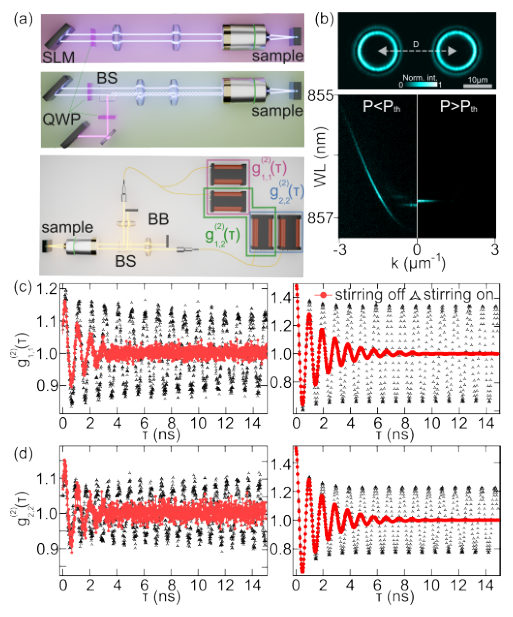
<figcaption class="paper-figure-caption"><b>Fig 1.</b> Figure 1. (a) Experimental scheme for polariton condensate intensity correlation measurements. Two condensates (C1, C2) are excited in optical traps at a variable distance D un- der two regimes: both in identical static traps (top) or with one trap stirred and the other static (middle). The bottom panel outlines the auto- and cross-correlation measurement setup, using color boxed detectors for corresponding correla- tion functions. BS - 50:50 beam splitter; BB - beam block. (b) Excitation profile (top panel). Typical dispersion image for the ground state trapped condensate below and above the threshold (bottom panel); WL - wavelength. (c)(d) Measured (left) and simulated (right)...</figcaption>
</figure>
<figure class="paper-figure-card">
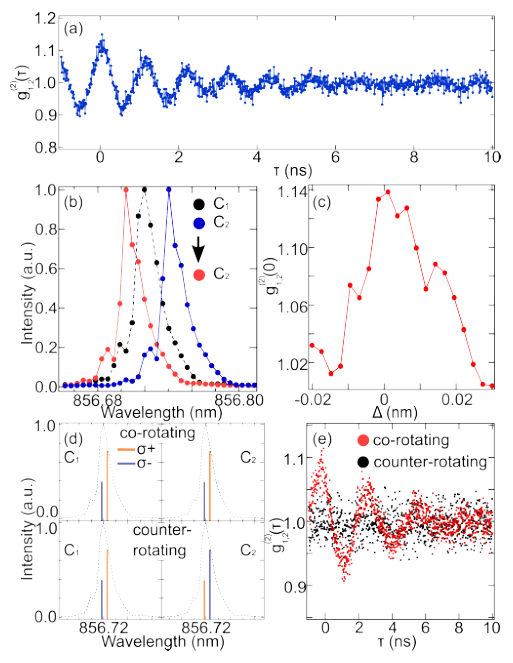
<figcaption class="paper-figure-caption"><b>Fig 2.</b> Figure 2. (a) Measured polarization-filtered intensity cross- correlation function g(2) 1,2(τ) between two condensates. (b) Measured emission spectra of the of the condensate C1 (black dots), while the emission wavelength of C2 is tuned by varying the trap diameter from blue to red dots. (c) Zero-delay cross- correlation amplitude g(2) 1,2(0) as a function of the spectral de- tuning ∆between the two condensates. (d) Schematic repre- sentation of the co-circularly and counter-circularly polarized dimer spectra. The spectrum of the C1 and C2 are the same and constituent σ+ and σ−lines are in resonance (upper pan- els) and out of resonance (lower panels). (e) Cross-correlation function g(2)...</figcaption>
</figure>
<figure class="paper-figure-card">
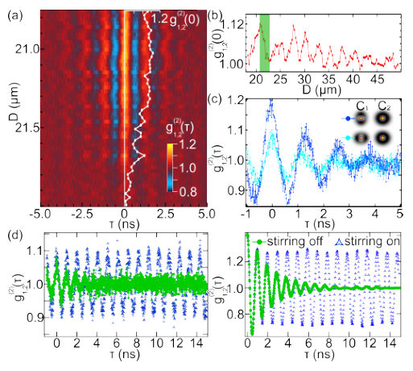
<figcaption class="paper-figure-caption"><b>Fig 3.</b> Figure 3. (a) The measured map of the cross-correlation function g(2) 1,2(τ) as a function of D. White dots show the</figcaption>
</figure>
</div>

<p><strong>Summary.</strong> The authors demonstrate that Larmor precession in two coupled polariton condensates can become mutually synchronized, even when only one condensate is actively driven. By measuring cross-correlation functions, they show that driving one site non-locally stabilizes the coherence of its neighbor, creating a robust, tunable platform for studying quantum synchronization in solid-state systems.</p>
<p><strong>Why it may be interesting.</strong> This work provides an experimental platform to study non-equilibrium, time-periodically driven quantum systems, offering insights into collective dynamics and entanglement-like phenomena (master-slave coupling) in strongly interacting bosonic systems.</p>
<details>
<summary>Detailed structure</summary>
<p><strong>Main problem.</strong> The research aims to demonstrate and characterize the mutual synchronization of Larmor precessions between two spatially separated, optically trapped polariton condensates.</p>
<p><strong>Main result.</strong> Optical stirring of one condensate non-locally stabilizes and prolongs the pseudo-spin dephasing time of its neighbor by an order of magnitude, establishing a master-slave entrainment mechanism.</p>
<p><strong>Method.</strong> The study uses polarization-resolved Hanbury-Brown-Twiss interferometry to measure second-order intensity correlation functions, $g^{(2)}_{1,2}(	au)$, which serve as diagnostics for condensate coupling and synchronization.</p>
<p><strong>Model / system.</strong> The physical system is a polariton condensate dimer formed in a microcavity, exhibiting spinor degrees of freedom that undergo Larmor precession due to intrinsic energy splitting. The coupling is mediated by polariton outflow between the two sites.</p>
<p><strong>Key observables.</strong> Cross-condensate correlation function $g^{(2)}_{1,2}(	au)$, pseudo-spin dephasing time, and the spectral overlap/winding direction of the precessing pseudo-spins.</p>
<p><strong>Important parameters / regimes.</strong> Spectral overlap, precession winding direction, and the strength of the optical stirring field relative to the Larmor frequency.</p>
<p><strong>Assumptions / limitations.</strong> The coupling mechanism is assumed to be mediated by polariton outflow, and the analysis often relies on approximations like the Kuramoto model or weak fluctuation limits.</p>
<p><strong>Figures summary.</strong> Figures show $g^{(2)}_{i,i}(	au)$ curves comparing static vs. stirred traps to demonstrate dephasing time prolongation, and $g^{(2)}_{1,2}(	au)$ dependence on separation and spectral detuning to map out synchronization regimes.</p>
<p><strong>Paper structure.</strong> The paper progresses from demonstrating basic synchronization via correlation functions to quantifying the non-local stabilization effect using optical stirring, and further explores the underlying physics by analyzing polarization plane locking using advanced correlation measurements.</p>
</details>
<details>
<summary>Abstract</summary>
<p>We demonstrate mutual synchronization of Larmor precessions between spatially separated, optically trapped polariton condensates. We identify the cross-condensate correlation g(2)1,2(τ) as a sensitive metric for condensate coupling. Synchronization of precessions in a condensate dimer is mediated by polariton outflow and resonantly depends on spectral overlap and precession winding. All-optical stirring of one site non-locally increases the pseudo-spin dephasing time of its static neighbor, prolonging phase-locking in a dimer by an order of magnitude. Our work establishes a scalable platform for studying non-equilibrium time-periodically driven systems and for high-speed spinoptronic networks.</p>
</details>
<p><sub><a href="#top">↑ back to top</a></sub></p>

<p><a id="paper-2610.26479"></a></p>
<h3 id="observation-and-control-of-polariton-noise-in-a-thermal-rydberg-atom-electrometer"><a href="http://arxiv.org/abs/2610.26479v1">Observation and control of polariton noise in a thermal Rydberg atom electrometer</a></h3>
<p><strong>Authors:</strong> Teng Zhang, Luís Felipe Gonçalves, Alisher Duspayev, Georg Raithel, David A. Anderson<br>
<strong>Type:</strong> both · <strong>Category:</strong> other · <strong>PDF:</strong> <a href="https://arxiv.org/pdf/2610.26479v1">https://arxiv.org/pdf/2610.26479v1</a><br>
<strong>Analysis basis:</strong> full PDF text, analyzed in chunks
<strong>Topic relevance:</strong> 🔥 <code>quantum measurements</code> <strong>4/5</strong> · <code>Rydberg arrays</code> <strong>3/5</strong> · <code>analog quantum simulation</code> <strong>3/5</strong> · <code>quantum optics experiment</code> <strong>3/5</strong> · <code>driven-dissipative phase transition</code> <strong>2/5</strong> · <code>methods for driven-dissipative</code> <strong>2/5</strong> · <code>Keldysh / 2PI / non-Gaussian methods</code> <strong>1/5</strong> · <code>Tavis-Cummings &amp; cavity-many-emitter</code> <strong>1/5</strong> · <code>correlated / nonlocal dissipation</code> <strong>1/5</strong> · <code>interference shaping light</code> <strong>1/5</strong></p>
<div class="figure-strip-hint">↔ Scroll figures horizontally</div>
<div class="paper-figures-scroll">
<figure class="paper-figure-card">
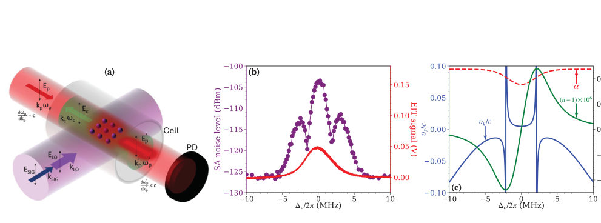
<figcaption class="paper-figure-caption"><b>Fig 1.</b> FIG. 1. (a) Conceptual diagram of the experimental setup, including the probe beam (red), the coupler beam (green), RF fields (purple), and their wave and polarization vectors. Primed probe-beam quantities are inside the Rydberg vapor. A photodiode (PD) measures the probe power transmitted through the EIT medium. (b) Measured background-subtracted probe-light transmission (red) and polariton noise (purple) at Ωc/(2π) ≈0.4 MHz versus coupler beam detuning ∆c. The utilized Rydberg state is 42D5/2 . (c) Theoretical probe-light absorption α (dashed red), scaled refractive index (n-1)×106</figcaption>
</figure>
<figure class="paper-figure-card">
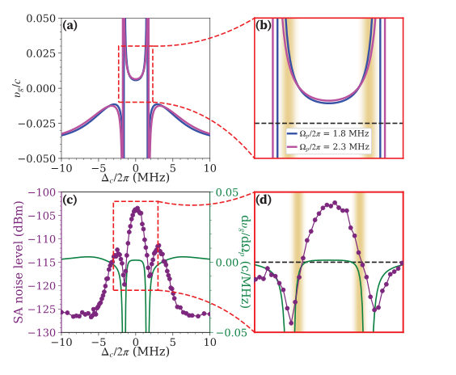
<figcaption class="paper-figure-caption"><b>Fig 2.</b> FIG. 2. Polariton noise amplification and reduction near EIT resonance. (a) Calculated polariton group velocity, vg, ver- sus coupler detuning, ∆c, for the probe Rabi frequencies, Ωp, indicated in panel (b). The latter is a zoom-in of panel (a). (c) dvg/dΩp versus ∆c (green) overlaid with the measured po- lariton noise level (purple). Panel (d) is a zoom-in of panel (c). Horizontal dashed black line in (b) and (d) corresponds to vg = 0 and dvg/dΩp = 0, respectively. In (c) and (d), the orange shading indicates the regions where vg &gt; 0 and dvg/dΩp &lt; 0. There, our model predicts polariton noise re- duction through a negative-feedback mechanism (see text for details).</figcaption>
</figure>
<figure class="paper-figure-card">
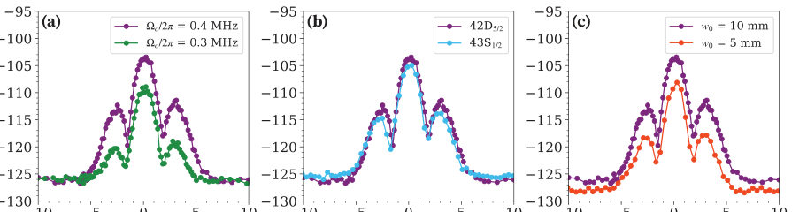
<figcaption class="paper-figure-caption"><b>Fig 3.</b> FIG. 3. Rydberg polariton noise versus coupler detuning, ∆c, at different coupler Rabi frequencies, Ωc, (a), using different Rydberg levels (b), and with different EIT beam volumes (c). In the latter panel, the indicated w0 = 10 mm (5 mm) corresponds to the EIT beam volume of 3.0 cm3 (0.75 cm3). w0 = 10 mm is also used for the data in (a) and (b). In (a) and (c), the utilized Rydberg state is 42D5/2 . In (b), the coupler Rabi frequencies are slightly different (Ωc/(2π) = 0.3 MHz (0.4 MHz) for the 43S1/2 ( 42D5/2 ) state) due to available coupler power and a difference in the respective electric-dipole transition matrix elements. See text for discussion.</figcaption>
</figure>
<figure class="paper-figure-card">
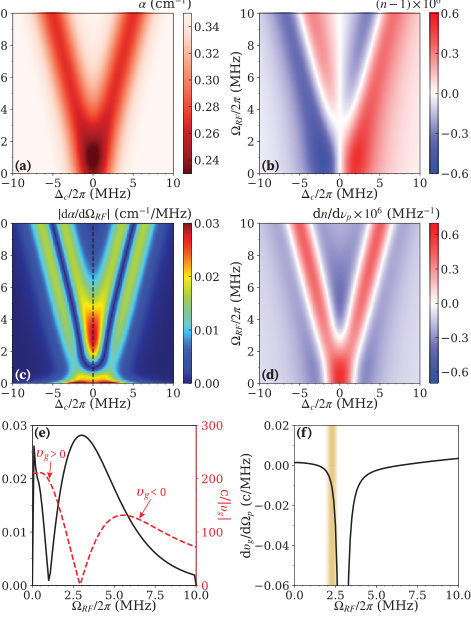
<figcaption class="paper-figure-caption"><b>Fig 4.</b> FIG. 4. Theoretical model. (a) Probe light absorption co- efficient, α, as a function of coupler detuning ∆c and Rabi frequency of the RF field, ΩRF . (b) Rescaled probe re- fractive index, 106 × [n(∆c, ωRF ) −1]. (c) Responsivity |[dα/dΩRF ](∆c, ωRF )|. (d) Derivative of the probe refractive index with respect to the probe frequency, [dn/dνp](∆c, ωRF ). (e) Responsivity |dα/dΩRF | (solid black curve) and c/|vg| (dashed red curve) as a function of ΩRF for fixed ∆c = 0. Branches with vg &gt; 0 and vg &lt; 0 are indicated on the c/|vg|- curve. (f) Feedback figure dvg/dΩp as a function of ΩRF for fixed ∆c = 0. The orange shading indicates the region where the theoretical model predicts polariton...</figcaption>
</figure>
<figure class="paper-figure-card">
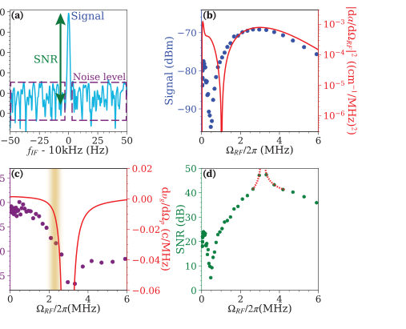
<figcaption class="paper-figure-caption"><b>Fig 5.</b> FIG. 5. (a) SA spectrum of the Rydberg-receiver output sig- nals for a measurement of 9.937 GHz fields at LO and SIG electric fields of ELO = 0.2 V/m and ESIG = 0.53 mV/m, re- spectively. (b) Theoretical responsivity squared, |dα/dΩRF |2, as a function of ΩRF overlaid with the measured heterodyne signal at IF = 10 kHz (blue dots). (c) Calculated dvg/dνp (solid red line) overlaid with the measured SA noise level (purple symbols) at IF = 10 kHz. Note the noise dip centered at ΩRF /(2π) ≈3.1 MHz. The orange shading indicates the region where negative feedback in the calculation suppresses polariton noise (see text for details). (d) Measured SNR as a function of ΩRF . The red dotted curve is a...</figcaption>
</figure>
</div>

<p><strong>Summary.</strong> This paper reports the observation and active control of polariton-mediated optical noise in a thermal Rydberg atom electrometer. By exploiting the nonlinear slow-light feedback mechanism inherent to the EIT resonance, the authors demonstrate how applying a reference RF field can suppress this noise. This establishes polariton noise as a critical, controllable factor for improving the sensitivity of Rydberg-based quantum sensors.</p>
<p><strong>Why it may be interesting.</strong> This work is highly relevant as it tackles fundamental noise limitations in quantum sensing using controlled light-matter interactions in Rydberg media, providing a concrete mechanism (negative feedback) to approach fundamental sensitivity limits.</p>
<details>
<summary>Detailed structure</summary>
<p><strong>Main problem.</strong> The primary goal is to establish metrics and actively control fundamental noise sources, specifically polariton-mediated optical noise, within quantum sensing platforms.</p>
<p><strong>Main result.</strong> The authors successfully observed and demonstrated active suppression of this intrinsic polariton noise by applying a resonant radio-frequency field, optimizing the electric-field sensitivity of the Rydberg electrometer.</p>
<p><strong>Method.</strong> The study combines experimental measurements of noise spectra with theoretical modeling using a phenomenological slow-light feedback picture derived from the density matrix formalism.</p>
<p><strong>Model / system.</strong> The system utilizes a thermal Rydberg atom vapor undergoing Electromagnetically Induced Transparency (EIT), which supports the formation and propagation of polaritons. The dynamics are modeled using the density matrix formalism and Lindblad equation.</p>
<p><strong>Key observables.</strong> Polariton noise (AC component), EIT absorption dip (DC component), group velocity ($v_g$), and the ratio of noise suppression/amplification across the EIT resonance.</p>
<p><strong>Important parameters / regimes.</strong> Coupler detuning ($\Delta_c$), Rabi frequencies ($\Omega_p, \Omega_c$), and the operating regime defined by the feedback mechanism ($v_g > 0$ and $dv_g/d\Omega_p < 0$).</p>
<p><strong>Assumptions / limitations.</strong> The analysis relies on a phenomenological slow-light feedback picture rather than a complete quantum model, and the noise dips are noted to be surprisingly narrow.</p>
<p><strong>Figures summary.</strong> Figures illustrate the measured EIT absorption and polariton noise spectra versus detuning, alongside calculated plots of absorption, refractive index, and group velocity, mapping the noise suppression regions to the negative feedback regimes.</p>
<p><strong>Paper structure.</strong> The paper progresses from identifying the noise problem in the Rydberg electrometer, presenting experimental measurements of noise structure across the EIT resonance, developing a theoretical model linking noise to slow-light feedback, and concluding with the demonstration of active noise control.</p>
</details>
<details>
<summary>Abstract</summary>
<p>The establishment of metrics and control of fundamental noise sources in quantum sensing is a long-standing goal in quantum science and technology. We report on the observation of polariton-mediated optical noise in a thermal Rydberg atom vapor and demonstrate its active control and suppression using a radio-frequency field in Rydberg electrometry. The noise exhibits structured amplification and reduction across the Rydberg electromagnetically induced transparency resonance. This reveals a nonlinear slow-light feedback mechanism in which the polariton medium stores and releases probe-field energy. We show that the reference radio-frequency field used in Rydberg heterodyne receivers can also tune the medium into an operating regime where high electromagnetic-field responsivity coincides with reduced optical noise. This operating-point control enables optimization of the electric-field sensitivity within the constraints imposed by Rydberg-polariton physics. These results establish polariton noise as a previously unrecognized intrinsic noise source in thermal Rydberg vapors and the corresponding control method as a crucial aspect of continued efforts to achieve fundamental sensitivity limits in Rydberg electrometry.</p>
</details>
<p><sub><a href="#top">↑ back to top</a></sub></p>

<p><a id="paper-2610.25222"></a></p>
<h3 id="self-trapping-and-liouvillian-spectral-transitions-in-a-dissipative-bose-hubbard-dimer"><a href="http://arxiv.org/abs/2610.25222v1">Self-Trapping and Liouvillian Spectral Transitions in a Dissipative Bose-Hubbard Dimer</a></h3>
<p><strong>Authors:</strong> Subhendu Saha, Raka Dasgupta<br>
<strong>Type:</strong> theory · <strong>Category:</strong> quantum gases · <strong>PDF:</strong> <a href="https://arxiv.org/pdf/2610.25222v1">https://arxiv.org/pdf/2610.25222v1</a><br>
<strong>Analysis basis:</strong> full PDF text, analyzed in chunks
<strong>Topic relevance:</strong> 🔥 <code>driven-dissipative phase transition</code> <strong>4/5</strong> · 🔥 <code>methods for driven-dissipative</code> <strong>4/5</strong> · <code>analog quantum simulation</code> <strong>3/5</strong> · <code>correlated / nonlocal dissipation</code> <strong>3/5</strong> · <code>non-equilibrium universality</code> <strong>3/5</strong> · <code>Keldysh / 2PI / non-Gaussian methods</code> <strong>2/5</strong> · <code>quantum measurements</code> <strong>1/5</strong></p>
<div class="figure-strip-hint">↔ Scroll figures horizontally</div>
<div class="paper-figures-scroll">
<figure class="paper-figure-card">
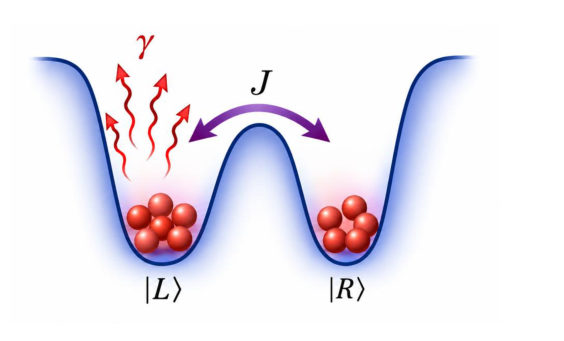
<figcaption class="paper-figure-caption"><b>Fig 1.</b> FIG. 1: Schematic diagram of a dissipative bosonic Josephson junction. Bosons trapped in a double-well potential undergo coherent tunneling between the wells, while localized particle loss with rate γ acts on Well 1.</figcaption>
</figure>
<figure class="paper-figure-card">
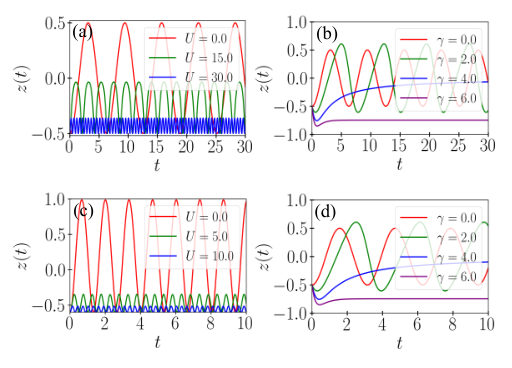
<figcaption class="paper-figure-caption"><b>Fig 2.</b> FIG. 2: Plots of population imbalance z(t) for interaction and dissipation-driven dynamics, respectively. (a) MF results varying U at γ = 0 (b) MF results varying γ at U = 0, (c) ED results varying U at γ = 0 for N = 5 (d) ED results varying γ at U = 0 for N = 4</figcaption>
</figure>
<figure class="paper-figure-card">
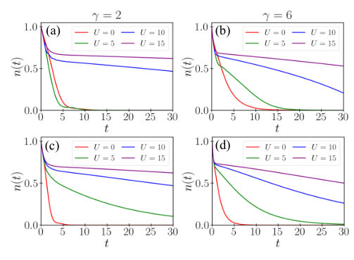
<figcaption class="paper-figure-caption"><b>Fig 3.</b> FIG. 3: Plots of time evolution of the normalized particle number n(t). Panels (a)-(b) shows MF method and (c)-(d) shows ED method.</figcaption>
</figure>
<figure class="paper-figure-card">
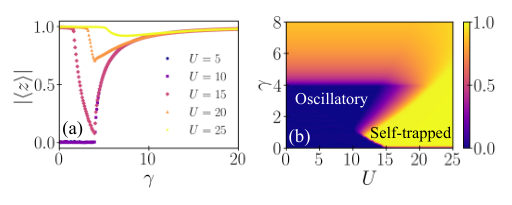
<figcaption class="paper-figure-caption"><b>Fig 4.</b> FIG. 5: Dissipation-driven crossover between oscillatory and self-trapped dynamics. (a) Order parameter |⟨z⟩| as a function of γ for different U values. (b) Phase diagram in the U −γ parameter plane, showing the oscillatory and self-trapped dynamical regimes. The color scale represents |⟨z⟩|, with larger values indicating stronger self-trapping.</figcaption>
</figure>
<figure class="paper-figure-card">
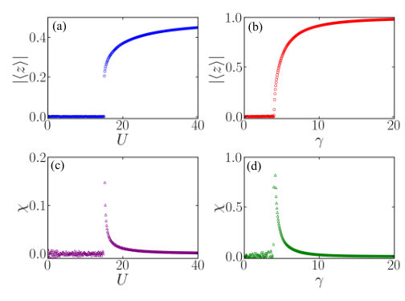
<figcaption class="paper-figure-caption"><b>Fig 5.</b> FIG. 4: Plots of order parameter |⟨z⟩| and susceptibility χ as functions of the interaction strength U and dissipation rate γ. Panels (a) and (c) show the results as U is varied at γ = 0, while (b) and (d) correspond to varying γ at U = 0. Here J = 1, N = 1 were used throughout.</figcaption>
</figure>
</div>

<p><strong>Summary.</strong> This paper analyzes the self-trapping transition in a dissipative Bose-Hubbard dimer, showing that environmental dissipation can induce localization similar to interaction effects. By analyzing the Liouvillian spectrum, the authors map out complex dynamical regimes resulting from the interplay between interaction and dissipation. The findings provide a detailed spectral understanding of how non-Hermitian effects govern quantum coherence in open quantum systems.</p>
<p><strong>Why it may be interesting.</strong> This work is highly relevant as it tackles non-equilibrium dynamics in bosonic systems, using advanced spectral tools (Liouvillian analysis) to characterize phase transitions induced by environmental coupling, a core topic in open quantum systems.</p>
<details>
<summary>Detailed structure</summary>
<p><strong>Main problem.</strong> The study investigates the self-trapping transition in a dissipative Bose-Hubbard dimer, comparing the effects of interaction versus dissipation on localization.</p>
<p><strong>Main result.</strong> Dissipation alone can induce a transient self-trapping-like localization, and the interplay between interaction and dissipation creates complex, multi-regime dynamics.</p>
<p><strong>Method.</strong> The analysis employs Mean-Field theory and Exact Diagonalization, characterizing the dynamics using the Liouvillian superoperator spectrum.</p>
<p><strong>Model / system.</strong> The system is a Bose-Josephson junction (BJJ) modeled by a Hamiltonian and subjected to dissipation via a Lindblad Master Equation. The model involves tunneling ($J$), on-site interaction ($U$), and a dissipation rate ($\Gamma$).</p>
<p><strong>Key observables.</strong> Self-trapping transition, Liouvillian spectrum (eigenvalues), Liouvillian gap, and population imbalance ($z$).</p>
<p><strong>Important parameters / regimes.</strong> Tunneling rate ($J$), interaction strength ($U$), and dissipation coefficient ($\Gamma$ or $\gamma$).</p>
<p><strong>Assumptions / limitations.</strong> The Mean-Field analysis assumes $U$ is an effective nonlinear interaction scale, and the dynamics are governed by the Lindblad Master Equation framework.</p>
<p><strong>Figures summary.</strong> Figures illustrate the time evolution of population imbalance ($z(t)$) and particle number ($n(t)$) under varying interaction and dissipation strengths, and show the Liouvillian spectrum's dependence on dissipation.</p>
<p><strong>Paper structure.</strong> The paper first establishes the model using the Hamiltonian and Lindblad equation, then analyzes the transition mechanisms (interaction-driven vs. dissipation-driven) using MF and ED, and finally connects these dynamical transitions to spectral features like exceptional points and the quantum-Zeno regime.</p>
</details>
<details>
<summary>Abstract</summary>
<p>We study the self-trapping transition in dissipative double wells using mean-field theory and exact diagonalization. We find that, similar to the conventional interaction-driven transition from oscillatory dynamics to self-trapping, dissipation alone can also induce self-trapping-like localization in one well. The resulting state, although transient and decaying, persists for a substantial time. At the mean-field level, the interaction- and dissipation-driven transitions are discontinuous and continuous, respectively. When interaction and dissipation both are present, their interplay produces three dynamical regimes: (i) at weak interaction, increasing dissipation drives a transition from oscillations to self-trapping; (ii) at moderate interaction, self-trapping at weak dissipation, oscillatory dynamics at intermediate dissipation, and re-entrant self-trapping at strong dissipation; and (iii) at strong interaction, self-trapping persists but is weakened by dissipation. We connect the transition with the Liouvillian spectrum. It is observed that purely dissipation-driven transition coincides with an exceptional point in the spectra, and a peak in the Liouvillian gap, marking the onset of the quantum-Zeno regime. In the presence of interactions, however, the onset of the Zeno regime is shifted to dissipation strengths larger than that required for the self-trapping transition.</p>
</details>
<p><sub><a href="#top">↑ back to top</a></sub></p>

<p><a id="paper-2610.26229"></a></p>
<h3 id="strong-to-weak-spontaneous-symmetry-breaking-transitions-on-a-quantum-processor"><a href="http://arxiv.org/abs/2610.26229v1">Strong-to-Weak Spontaneous Symmetry Breaking Transitions on a Quantum Processor</a></h3>
<p><strong>Authors:</strong> Zhi-Yuan Wei, Christopher Fechisin, Yu-Xin Wang, Jeet Shah, Tsung-Cheng Lu, Cheng-Ju Lin, Alexey V. Gorshkov<br>
<strong>Type:</strong> experiment · <strong>Category:</strong> statistical mechanics · <strong>PDF:</strong> <a href="https://arxiv.org/pdf/2610.26229v1">https://arxiv.org/pdf/2610.26229v1</a><br>
<strong>Analysis basis:</strong> full PDF text, analyzed in chunks
<strong>Topic relevance:</strong> 🔥 <code>QC/QI experiment</code> <strong>4/5</strong> · <code>correlated / nonlocal dissipation</code> <strong>3/5</strong> · <code>driven-dissipative phase transition</code> <strong>3/5</strong> · <code>non-equilibrium universality</code> <strong>3/5</strong> · <code>quantum measurements</code> <strong>3/5</strong> · <code>analog quantum simulation</code> <strong>2/5</strong> · <code>methods for driven-dissipative</code> <strong>2/5</strong></p>
<div class="figure-strip-hint">↔ Scroll figures horizontally</div>
<div class="paper-figures-scroll">
<figure class="paper-figure-card">
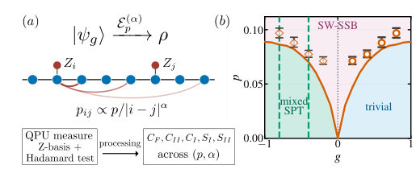
<figcaption class="paper-figure-caption"><b>Fig 1.</b> FIG. 1. Setup and phase diagram. (a) We study mixed states ρ generated by applying a power-law-correlated dephas- ing channel E(α) p [Eq. (3)] to initial matrix-product states (MPS) |ψg⟩[Eq. (1)]. Computational-basis measurements pro- vide the data for reconstructing the SW-SSB correlators CF , CII, and CI, while an additional Hadamard-test measurement provides access to the string observables SI and SII. The reconstruction combines quantum measurements with classi- cally computed channel weights, allowing different (p, α) to be explored using the same measurement data. (b) Phase dia- gram at α = 1.4. The orange curve indicates the theoretical thermodynamic-limit SW-SSB transition boundary...</figcaption>
</figure>
<figure class="paper-figure-card">
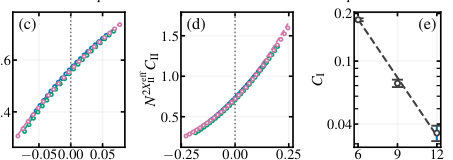
<figcaption class="paper-figure-caption"><b>Fig 2.</b> FIG. 2. SW-SSB transition. Results for g = 0.4 and α = 1.4. (a),(b) Scaled fidelity correlator CF and R´enyi-2 correlator CII for N = 6, 9, 12. Colors distinguish system sizes, open symbols denote QPU measurements, and dashed curves show exact finite-chain calculations. Dotted vertical lines indicate the transition-point estimates pc,F and pc,II obtained from finite-size scaling fits across the three system sizes. (c),(d) Corresponding finite-size scaling collapses. The exact curves in (a)–(d) are rescaled using the scaling parameters fitted to the QPU data. Error bars in (a)–(d) are smaller than the plotted symbols and are not shown. (e) System-size dependence of the linear correlator CI,...</figcaption>
</figure>
<figure class="paper-figure-card">
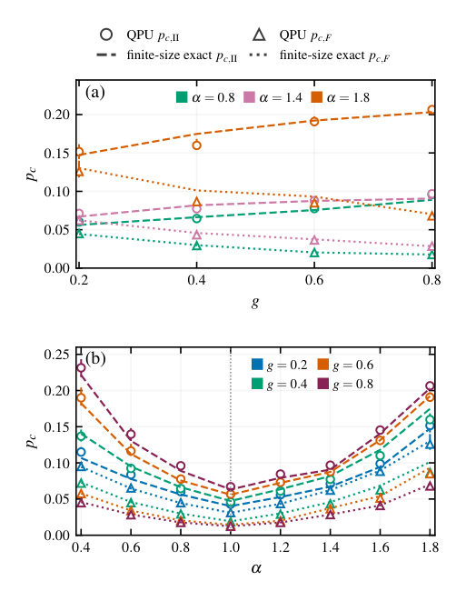
<figcaption class="paper-figure-caption"><b>Fig 3.</b> FIG. 3. Estimated SW-SSB transition points. (a) Dependence of the estimated transition points pc,F and pc,II on the MPS parameter g at fixed α. The α = 1.4 cut corre- sponds to the phase diagram in Fig. 1(b). (b) Dependence on the power-law exponent α at fixed g. The dotted vertical line marks α = 1, where the channel normalization changes its functional form [cf. Eq. (3)]. Symbols denote QPU esti- mates, while dashed and dotted curves show transition-point estimates obtained from separate fits to the exact finite-chain correlators using the same fitting procedure. A comparison with large-system theoretical phase boundaries is provided in the SM [16].</figcaption>
</figure>
<figure class="paper-figure-card">

<figcaption class="paper-figure-caption"><b>Fig 4.</b> Figure 2 shows representative results at g = 0.4 and α = 1.4. The scaled fidelity and R´enyi-2 correlators exhibit clear finite-size crossings [Figs. 2(a),(b)]. Finite- size scaling fits of the three measured sizes N = 6, 9, 12 yield transition-point estimates pc,D (D = F, II), with the corresponding scaling collapses shown in Figs. 2(c),(d). In contrast, the linear correlator CI decays approximately exponentially with N [Fig. 2(e)]. The measurements agree well with exact finite-chain results (dashed curves). Additional parameter cuts and fitting details are provided in the SM [16]. Together, these results reveal finite-size critical signatures of SW-SSB transitions. We next map the...</figcaption>
</figure>
<figure class="paper-figure-card">
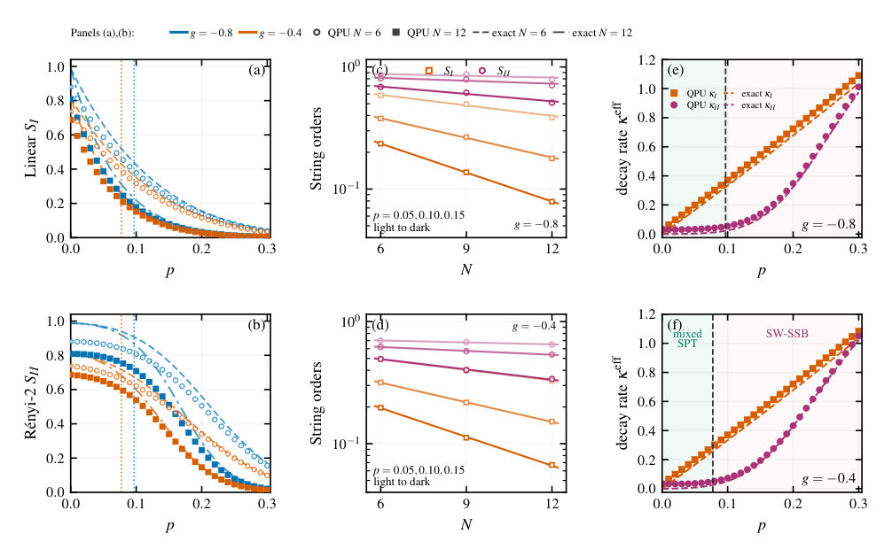
<figcaption class="paper-figure-caption"><b>Fig 5.</b> FIG. 4. Signatures of the mixed-SPT phase at α = 1.4. Error bars are smaller than the plotted symbols and are omitted. (a),(b) Linear and R´enyi-2 string order parameters, SI and SII, as functions of the dephasing strength p for g = −0.8, −0.4 and N = 6, 12. Vertical dotted lines mark pc,II, independently extracted from the SW-SSB finite-size scaling at the same |g| [cf. Fig. 3]. (c),(d) System-size dependence of the two string orders at fixed p = 0.05, 0.10, 0.15 for g = −0.8 and −0.4, respectively. Solid lines show exponential fits SX ∝exp  −κeff X ℓN , with ℓN = N/3 and X ∈{I, II}. (e),(f) Corresponding effective decay rates κeff I and κeff II as functions of p. Dashed curves are...</figcaption>
</figure>
</div>

<p><strong>Summary.</strong> This work experimentally investigates Strong-to-Weak Spontaneous Symmetry Breaking (SW-SSB) transitions in mixed quantum states using a superconducting quantum processor. The authors introduce a novel quantum-classical measurement protocol to reconstruct nonlinear correlators, allowing them to observe finite-size critical scaling signatures. This establishes a powerful quantum-classical approach for diagnosing complex symmetry breaking and topological order in noisy quantum systems.</p>
<p><strong>Why it may be interesting.</strong> The methodology provides a concrete, experimental roadmap for probing complex, non-linear quantum phase transitions (like SW-SSB) in realistic, noisy quantum hardware, bridging quantum information diagnostics with condensed matter critical phenomena.</p>
<details>
<summary>Detailed structure</summary>
<p><strong>Main problem.</strong> The paper addresses the challenge of experimentally characterizing Strong-to-Weak Spontaneous Symmetry Breaking (SW-SSB) transitions in mixed quantum states, which cannot be detected using simple linear observables.</p>
<p><strong>Main result.</strong> The authors report the first experimental observation of finite-size critical scaling for SW-SSB transitions on a superconducting quantum processor, successfully mapping the transition points across various system parameters.</p>
<p><strong>Method.</strong> A quantum-classical measurement protocol is developed to reconstruct nonlinear mixed-state correlators (like fidelity and Rényi-2) using only two measurement settings, allowing for the diagnosis of non-linear critical behavior.</p>
<p><strong>Model / system.</strong> The study uses a superconducting quantum processor to simulate mixed states generated by applying a power-law-correlated dephasing channel to an initial Matrix-Product State (MPS).</p>
<p><strong>Key observables.</strong> Fidelity correlator ($C_F$), Rényi-2 correlator ($C_{II}$), linear correlators ($C_I$), and string observables ($S_I, S_{II}$).</p>
<p><strong>Important parameters / regimes.</strong> Dephasing strength ($p$), correlation exponent ($\alpha$), and an initial state parameter ($g$).</p>
<p><strong>Assumptions / limitations.</strong> The analysis relies on the ability to map the transition points across a tunable parameter space and compares QPU results against exact finite-chain calculations.</p>
<p><strong>Figures summary.</strong> Figures demonstrate finite-size scaling analysis for $C_{II}$ and $C_F$ across varying $g$ and $\alpha$, and show the distinct behavior of string order parameters ($S_I$ vs $S_{II}$) in the mixed-SPT regime.</p>
<p><strong>Paper structure.</strong> The paper develops the measurement protocol, applies it to the MPS/dephasing model, analyzes the finite-size scaling of nonlinear correlators to pinpoint SW-SSB transitions, and complements this with string-order measurements to identify mixed-state SPT phases.</p>
</details>
<details>
<summary>Abstract</summary>
<p>Mixed quantum states can exhibit unconventional forms of symmetry breaking without pure-state counterparts. A prominent example is strong-to-weak spontaneous symmetry breaking (SW-SSB), which cannot be diagnosed by observables linear in the density matrix. Here, we experimentally resolve finite-size critical signatures of SW-SSB transitions on a superconducting quantum processor. We develop a measurement protocol that combines quantum measurements with classical processing based on the known dephasing channel to reconstruct nonlinear mixed-state correlators. Using only two measurement settings, the protocol reconstructs fidelity, Rényi-2, and linear correlators, as well as string observables. Applying this approach to matrix-product states subjected to power-law-correlated dephasing, we observe finite-size crossings and scaling collapses in nonlinear correlators, accompanied by decaying linear correlations. We further map the estimated SW-SSB transition points across initial-state and channel parameters. Measurements of linear and Rényi-2 string observables further reveal signatures of mixed-state symmetry-protected topological (SPT) phases, with a nonlinear string-order crossover aligned with an independently estimated SW-SSB transition point. Our results establish a quantum-classical approach to probing SW-SSB critical behavior and mixed-state SPT order.</p>
</details>
<p><sub><a href="#top">↑ back to top</a></sub></p>

<p><a id="paper-2610.26736"></a></p>
<h3 id="phase-sensitive-quantum-state-texture-during-thermalization-of-a-dzyaloshinskii-moriya-heisenberg-dimer"><a href="http://arxiv.org/abs/2610.26736v1">Phase-sensitive quantum-state texture during thermalization of a Dzyaloshinskii-Moriya Heisenberg dimer</a></h3>
<p><strong>Authors:</strong> Onofre Rojas, Zhirayr Adamyan, Fadwa Benabdallah, Vadim Ohanyan<br>
<strong>Type:</strong> theory · <strong>Category:</strong> statistical mechanics · <strong>PDF:</strong> <a href="https://arxiv.org/pdf/2610.26736v1">https://arxiv.org/pdf/2610.26736v1</a><br>
<strong>Analysis basis:</strong> full PDF text, analyzed in chunks
<strong>Topic relevance:</strong> 🔥 <code>methods for driven-dissipative</code> <strong>4/5</strong> · <code>driven-dissipative phase transition</code> <strong>3/5</strong> · <code>non-equilibrium universality</code> <strong>3/5</strong> · <code>scars &amp; prethermalization</code> <strong>3/5</strong> · <code>Keldysh / 2PI / non-Gaussian methods</code> <strong>2/5</strong> · <code>quantum measurements</code> <strong>2/5</strong> · <code>analog quantum simulation</code> <strong>1/5</strong> · <code>correlated / nonlocal dissipation</code> <strong>1/5</strong></p>
<div class="figure-strip-hint">↔ Scroll figures horizontally</div>
<div class="paper-figures-scroll">
<figure class="paper-figure-card">
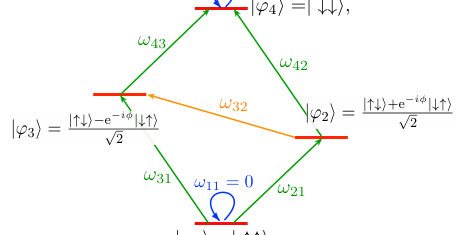
<figcaption class="paper-figure-caption"><b>Fig 1.</b> FIG. 1. Schematic representation of the transverse and longi- tudinal transitions. The links are labeled by the signed gaps ω21, ω31, ω42, ω43. The physical absorption direction on each link is determined by the actual energy ordering. Away from level crossings, the loop at ω = 0 denotes pure dephasing. Since ⟨φ1|Sz|φ1⟩= +1/2 and ⟨φ4|Sz|φ4⟩= −1/2, this zero- frequency channel affects both polarized states, but with op- posite signs in the corresponding matrix elements.</figcaption>
</figure>
<figure class="paper-figure-card">

<figcaption class="paper-figure-caption"><b>Fig 2.</b> FIG. 4. Rugosity R(ϱ) for D = 0, 2, 4, showing how the DM interaction changes the dynamical departure from the uniform coherent reference. Parameters are J = Jz = 1, h = 0.5, η = 0.2, and ωc = 5. Panel (a): heating, T0 = 1 →Tb = 10; panel (b): cooling, T0 = 10 →Tb = 1.</figcaption>
</figure>
<figure class="paper-figure-card">
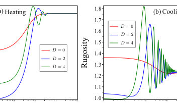
<figcaption class="paper-figure-caption"><b>Fig 3.</b> Figure 4 shows the three interconnected effects of D: it changes the splitting K = √</figcaption>
</figure>
<figure class="paper-figure-card">
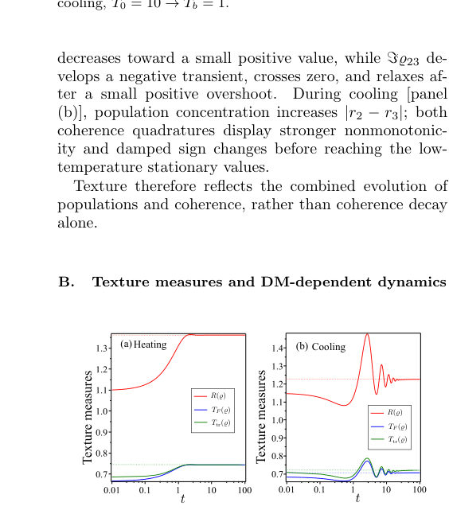
<figcaption class="paper-figure-caption"><b>Fig 4.</b> FIG. 3. Rugosity R(ϱ), fidelity-based texture TF (ϱ), and trace-distance texture Ttr(ϱ). The quantities R and TF are monotonic functions of the same overlap, R = −ln(1 −TF ). Parameters are J = Jz = 1, D = 1, h = 0.5, η = 0.2, and ωc = 5. Panel (a): heating, with a smooth approach to stationarity; panel (b): cooling, with a pronounced nonmono- tonic transient.</figcaption>
</figure>
<figure class="paper-figure-card">
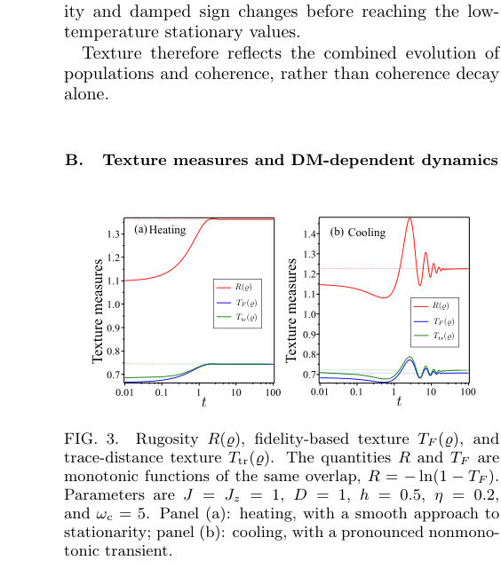
<figcaption class="paper-figure-caption"><b>Fig 5.</b> Figure 3 compares overlap-based texture with trace- distance distinguishability. Since R = −ln(1 −TF ), R and TF have identical extrema and state ordering and differ only in scale. By contrast, Ttr depends on the full spectrum of ϱ −|f1⟩⟨f1|. During heating [panel (a)], the three curves approach stationarity predominantly smoothly, with only a weak transient overshoot, and TF</figcaption>
</figure>
</div>

<p><strong>Summary.</strong> This paper analyzes how quantum-state texture evolves as an anisotropic Heisenberg dimer thermalizes. By solving the Lindblad master equation, the authors show that the DM interaction imparts a phase-sensitive signature on this texture. This demonstrates that texture is a powerful diagnostic tool, revealing complex dynamics distinct from simple population decay.</p>
<p><strong>Why it may be interesting.</strong> This work provides a detailed, quantitative look at non-equilibrium dynamics in quantum many-body systems, specifically highlighting how geometric/phase information (texture) survives and characterizes relaxation beyond simple measures of mixedness.</p>
<details>
<summary>Detailed structure</summary>
<p><strong>Main problem.</strong> The study investigates the complex dynamics of quantum-state texture during the thermal relaxation process of an anisotropic spin-1/2 Heisenberg dimer.</p>
<p><strong>Main result.</strong> The research establishes that quantum-state texture serves as a phase-sensitive diagnostic of thermal relaxation, revealing distinct transient behaviors during cooling and heating protocols.</p>
<p><strong>Method.</strong> The authors construct and solve a global weak-coupling Lindblad master equation, comparing various texture diagnostics (like rugosity and fidelity) against standard measures like purity.</p>
<p><strong>Model / system.</strong> The system is an anisotropic spin-1/2 Heisenberg dimer subjected to a longitudinal magnetic field and a Dzyaloshinskii-Moriya (DM) interaction. The dynamics are modeled using the Lindblad formalism coupled to a bosonic bath.</p>
<p><strong>Key observables.</strong> Quantum-state texture (diagnosed by rugosity, fidelity-based texture, trace-distance texture), single-excitation coherence, vector spin chirality, and purity.</p>
<p><strong>Important parameters / regimes.</strong> The DM coupling strength (D), the longitudinal field (h), and the temperature/thermal bath parameters ($eta$).</p>
<p><strong>Assumptions / limitations.</strong> The analysis relies on the Born–Markov approximation and the full secular approximation for the weak-coupling regime.</p>
<p><strong>Figures summary.</strong> Figures illustrate the comparison of purity and texture measures during heating and cooling protocols for varying DM coupling strengths.</p>
<p><strong>Paper structure.</strong> The paper first sets up the Hamiltonian and the Lindblad master equation, then analyzes the separation of population thermalization from coherence decay, and finally compares various texture diagnostics to show the phase-sensitive nature of the relaxation.</p>
</details>
<details>
<summary>Abstract</summary>
<p>We investigate quantum-state texture during the thermal relaxation of an anisotropic spin-$1/2$ Heisenberg dimer subject to a longitudinal magnetic field and a Dzyaloshinskii-Moriya (DM) interaction. Starting from local transverse and longitudinal couplings to a bosonic bath, we construct a global weak-coupling Lindblad equation, identify its transition channels, and discuss the applicability and limitations of the secular approximation. The Gibbs state is obtained explicitly in the local spin basis, revealing that the DM coupling controls both the modulus and phase of the single-excitation coherence by modifying the energy splitting and rotating the chiral phase. For heating and cooling protocols, we compare rugosity, fidelity-based texture, and trace-distance texture with coherence, vector spin chirality, and purity. The relaxation dynamics separates population thermalization from the decay and precession of deliberately prepared energy-basis coherence. Their combined contribution to local coherence produces DM-dependent texture overshoots and, during cooling, damped oscillations and sign changes of the coherence quadratures. These transients differ from the evolution of coherence magnitude and purity, while trace-distance texture weights them differently from the overlap-based quantifiers. Calculations at reduced dissipation preserve the texture maxima within the secular model. The results identify a phase-sensitive diagnostic of relaxation.</p>
</details>
<p><sub><a href="#top">↑ back to top</a></sub></p>

<p><a id="paper-2610.26328"></a></p>
<h3 id="high-order-resonances-and-emergent-coherent-dynamics-in-interacting-stark-chains"><a href="http://arxiv.org/abs/2610.26328v1">High-order resonances and emergent coherent dynamics in interacting Stark chains</a></h3>
<p><strong>Authors:</strong> Jiahe Chang, Hongzheng Zhao<br>
<strong>Type:</strong> theory · <strong>Category:</strong> other · <strong>PDF:</strong> <a href="https://arxiv.org/pdf/2610.26328v1">https://arxiv.org/pdf/2610.26328v1</a><br>
<strong>Analysis basis:</strong> full PDF text, analyzed in chunks
<strong>Topic relevance:</strong> 🔥 <code>analog quantum simulation</code> <strong>4/5</strong> · 🔥 <code>scars &amp; prethermalization</code> <strong>4/5</strong> · <code>Frenkel-Kontorova</code> <strong>3/5</strong> · <code>non-equilibrium universality</code> <strong>3/5</strong> · <code>methods for driven-dissipative</code> <strong>2/5</strong></p>
<div class="figure-strip-hint">↔ Scroll figures horizontally</div>
<div class="paper-figures-scroll">
<figure class="paper-figure-card">
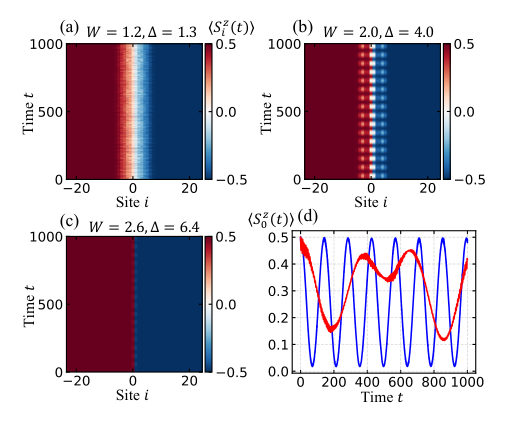
<figcaption class="paper-figure-caption"><b>Fig 1.</b> FIG. 1. Quench dynamics for different parameters. (a)–(c) Spatiotemporal maps of ⟨Sz i (t)⟩for three representative pa- rameter points, characterized respectively by a smooth tran- sition region, coherent oscillations, and a sharp domain wall. (d) Time traces of ⟨Sz 0(t)⟩for two cases exhibiting coher- ent oscillations. The blue curve corresponds to W = 8.0, ∆= 12.0, while the red curve corresponds to W = 2.0, ∆= 5.0. Although both exhibit long-lived coherent oscil- lations, their temporal structures are different: the former is nearly cosine-like, whereas the latter shows a more complex oscillatory pattern.</figcaption>
</figure>
<figure class="paper-figure-card">
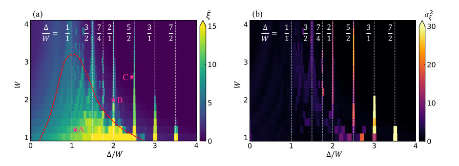
<figcaption class="paper-figure-caption"><b>Fig 2.</b> FIG. 2. Localization-length maps. Colormaps of (a) the time-averaged localization length ¯ξ and (b) its temporal fluctuations σ2 ξ as functions of W and ∆/W, obtained from TEBD simulations for L = 48 up to T = 1000. (a) Brighter colors indicate a larger average extent of domain-wall melting. The red dashed curve marks the contour ¯ξ = 10 as a guide, separating the broad-melting region at smaller W from the strongly suppressed melting at larger W. White dashed lines mark simple fractional values of ∆/W where ¯ξ is anomalously enhanced. Points A, B, and C correspond to Fig. 1(a)–(c), respectively. (b) Brighter colors indicate stronger temporal fluctuations. Enhanced σ2 ξ is concentrated near...</figcaption>
</figure>
<figure class="paper-figure-card">
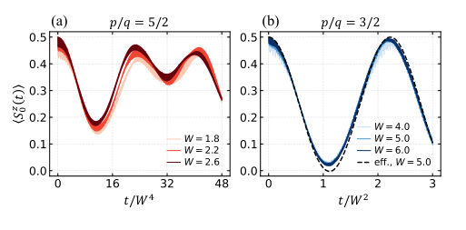
<figcaption class="paper-figure-caption"><b>Fig 3.</b> FIG. 3. Time-rescaled collapse of resonant dynamics. At fixed ∆/W = p/q, the local magnetization ⟨Sz 0(t)⟩for different W approximately collapses under the rescaling τ = t/W nmin−1. Panels (a) and (b) correspond to p/q = 5/2 and 3/2, with nmin = 5 and 3, respectively. The black dashed curve in panel (b) is obtained from the third-order effective Hamilto- nian described below and closely reproduces the full-model dynamics. The collapse confirms that nmin sets the charac- teristic dynamical timescale; residual deviations arise from subleading higher-order corrections.</figcaption>
</figure>
<figure class="paper-figure-card">
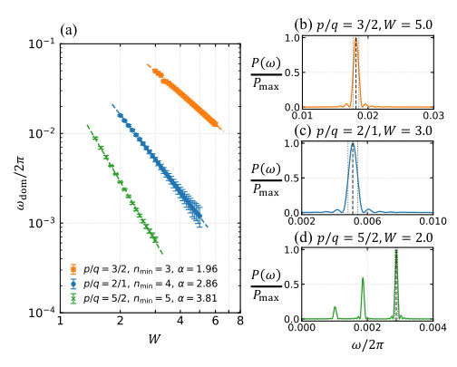
<figcaption class="paper-figure-caption"><b>Fig 4.</b> FIG. 4. Dominant-frequency scaling of the resonant dynam- ics. (a) Dominant oscillation frequency ωdom/2π, extracted from the frequency spectrum of ⟨Sz 0(t)⟩, as a function of the Stark gradient W on log–log axes for resonance ratios p/q = 3/2, 2, and 5/2. The error bars indicate the lower and upper half-maximum frequencies of the dominant spec- tral peak. Power-law fits ωdom ∼W −α yield exponents con- sistent with the prediction α = nmin −1. (b)–(d) Repre- sentative frequency spectra for (W, ∆) = (5.0, 7.5), (3.0, 6.0), and (2.0, 5.0), corresponding to p/q = 3/2, 2, and 5/2, re- spectively. The corresponding time windows are [0, 1000], [0, 1500], and [0, 10000]. Each spectral power P(ω) is...</figcaption>
</figure>
</div>

<p><strong>Summary.</strong> This work investigates high-order resonances in interacting quantum spin chains under a linear potential gradient (Stark effect). The authors systematically map out a hierarchy of resonances, showing they manifest as long-lived coherent oscillations. By deriving effective Hamiltonians, they provide a microscopic understanding of how specific interaction-to-tilt ratios stabilize these slow, coherent many-body dynamics.</p>
<p><strong>Why it may be interesting.</strong> The connection between commensurately tuned interaction-to-tilt ratios and the emergence of parametrically slow, coherent many-body dynamics is highly relevant for understanding controllable quantum simulation platforms.</p>
<details>
<summary>Detailed structure</summary>
<p><strong>Main problem.</strong> The study aims to systematically classify and microscopically describe high-order interaction-tilt resonances in interacting quantum spin chains subjected to a linear potential gradient (Stark effect).</p>
<p><strong>Main result.</strong> The authors uncover a hierarchy of high-order resonances characterized by long-lived, coherent many-body oscillations whose timescales depend parametrically on the resonance order and the ratio of interaction to tilt strength.</p>
<p><strong>Method.</strong> The analysis employs quench dynamics simulations using TEBD and develops an effective Hamiltonian via high-frequency expansion and perturbation theory to calculate resonant coupling strengths.</p>
<p><strong>Model / system.</strong> The system is an interacting Stark spin chain, modeled by a Hamiltonian involving nearest-neighbor interactions (Ising term $\Delta$) and a linear potential gradient ($W$). The dynamics are analyzed by mapping the system to a fermionic Hamiltonian.</p>
<p><strong>Key observables.</strong> Localization length ($\xi(t)$), average localization length ($ar{\xi}$), fluctuation measure ($\sigma^2_{\xi}$), and the dominant frequency ($\omega_{	ext{dom}}$).</p>
<p><strong>Important parameters / regimes.</strong> The resonance condition is governed by the fractional ratio $\Delta/W = p/q$, and the resonance order $n$ dictates the scaling of the dominant frequency ($\omega_{	ext{dom}} \sim W^{-(n-1)}$).</p>
<p><strong>Assumptions / limitations.</strong> The analysis relies on the high-frequency expansion and perturbation theory (Schrieffer-Wolff), which is systematic but computationally intensive for very high orders.</p>
<p><strong>Figures summary.</strong> Figures illustrate the three dynamical regimes (smooth, coherent, suppressed) via magnetization profiles, and show the resonance signatures in localization length maps ($ar{\xi}$ and $\sigma^2_{\xi}$) at specific $\Delta/W$ ratios.</p>
<p><strong>Paper structure.</strong> The paper progresses from general dynamic characterization using localization length to deriving an effective Hamiltonian via perturbation theory, culminating in the calculation of specific resonant coupling strengths for higher-order processes.</p>
</details>
<details>
<summary>Abstract</summary>
<p>A linear potential gradient can strongly suppress quantum dynamics, while interactions can activate resonant many-body processes whose higher-order structure remains largely unexplored. Here we uncover a systematic hierarchy of high-order interaction--tilt resonances in an interacting Stark chain, where the resonance order counts the minimal number of elementary exchange steps involved. These resonances manifest as long-lived coherent oscillations with order-dependent timescales. By isolating individual resonant channels and developing a microscopic effective description, we connect these dynamical timescales to the underlying many-body exchange processes and reveal a pronounced dependence on the initial-state structure. Our results provide crucial insights into high-order many-body resonances and show how commensurate interaction-to-tilt ratios generate a hierarchy of parametrically slow coherent many-body dynamics.</p>
</details>
<p><sub><a href="#top">↑ back to top</a></sub></p>

<p><a id="paper-2610.25014"></a></p>
<h3 id="large-language-model-steering-of-acousto-optic-tweezer-arrays"><a href="http://arxiv.org/abs/2610.25014v1">Large Language Model Steering of Acousto-Optic Tweezer Arrays</a></h3>
<p><strong>Authors:</strong> Cheng Sheng, Kai-xuan Xiao, Yin Zhang, Wen-hao Wang, Feng-yi Zhang, Xu-xing Geng, Guang-ming Huang, Gao-xiang Li<br>
<strong>Type:</strong> experiment · <strong>Category:</strong> other · <strong>PDF:</strong> <a href="https://arxiv.org/pdf/2610.25014v1">https://arxiv.org/pdf/2610.25014v1</a><br>
<strong>Analysis basis:</strong> full PDF text, analyzed in chunks
<strong>Topic relevance:</strong> 🔥 <code>quantum measurements</code> <strong>4/5</strong> · <code>QC/QI experiment</code> <strong>3/5</strong> · <code>Rydberg arrays</code> <strong>3/5</strong> · <code>analog quantum simulation</code> <strong>3/5</strong> · <code>methods for driven-dissipative</code> <strong>2/5</strong> · <code>quantum optics experiment</code> <strong>1/5</strong></p>
<div class="figure-strip-hint">↔ Scroll figures horizontally</div>
<div class="paper-figures-scroll">
<figure class="paper-figure-card">
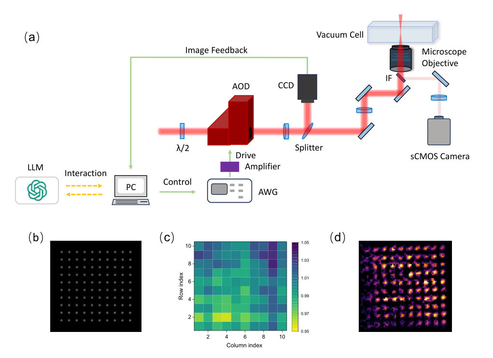
<figcaption class="paper-figure-caption"><b>Fig 1.</b> FIG. 1. LLM-guided optical control on a neutral-atom platform. (a) An 852-nm laser generates tweezers for 87Rb atoms. A crossed AOD pair is driven by an arbitrary waveform generator (AWG) through RF amplifiers. A 1:99 beamsplitter directs 1% of the optical power to the feedback CCD and 99% through an interference filter (IF) and microscope objective toward the vacuum cell; a sCMOS camera records the science image. The LLM exchanges measured states and proposed strategies with the computer through a human-verified interface. (b) Measured 10 × 10 tweezer intensity array on the feedback camera. (c) Normalized fitted-peak map at the optimized setting. (d) Representative fluorescence image of...</figcaption>
</figure>
<figure class="paper-figure-card">
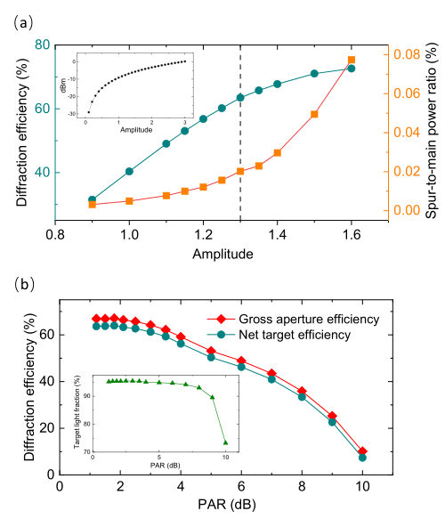
<figcaption class="paper-figure-caption"><b>Fig 2.</b> FIG. 2. Choice of the RF operating regime. (a) Diffraction effi- ciency (teal circles, left axis) and spur-to-main RF-power ratio (orange squares, right axis) versus normalized multifrequency amplitude. The dashed line marks A = 1.30, where diffraction is high but the spur ratio has not yet entered its rapid-growth regime; the inset calibrates normalized AWG amplitude to RF power in dBm. (b) Gross aperture efficiency (red diamonds) and net target efficiency (teal circles) for 14 phase condi- tions ordered by peak-to-average power ratio (PAR). Both efficiencies deteriorate with increasing PAR; the inset shows the accompanying loss of target-array power fraction. The scan defines a low-PAR,...</figcaption>
</figure>
<figure class="paper-figure-card">
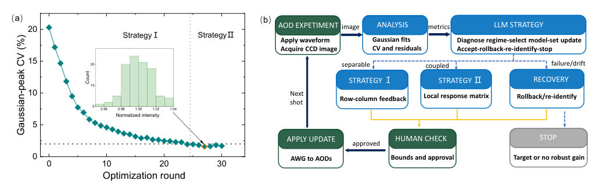
<figcaption class="paper-figure-caption"><b>Fig 3.</b> FIG. 3. Experimental trajectory and step-by-step LLM control workflow. (a) The Gaussian-peak CV decreases under Strategy I, separable row–column feedback, before promotion to Strategy II, a measured 100 × 20 local response matrix. The orange diamond identifies the response-matrix state whose 100-site normalized-intensity distribution is shown in the inset; the lowest plotted CV occurs at R27, with a reported minimum of 1.57%, whereas the final plotted state R30 has a CV of approximately 1.7%. (b) At each round the experiment supplies an image, deterministic analysis returns CV and residual metrics, and GPT-5.5 Thinking selects a strategy and proposes the next update. A human verifies bounds...</figcaption>
</figure>
</div>

<p><strong>Summary.</strong> The research demonstrates using a Large Language Model (LLM) as an intelligent, human-in-the-loop layer to guide the complex calibration of acousto-optic tweezer arrays for neutral atoms. By adaptively selecting and refining control strategies—such as switching from simple to local response matrix fitting—the system achieved a significant reduction in spatial intensity variation. This highlights a powerful paradigm for using AI to manage the iterative, expert-driven optimization of quantum control systems.</p>
<p><strong>Why it may be interesting.</strong> This work bridges advanced quantum control theory with modern AI tools, showing how LLMs can manage the complex, multi-stage decision-making process inherent in optimizing physical quantum hardware.</p>
<details>
<summary>Detailed structure</summary>
<p><strong>Main problem.</strong> Controlling quantum hardware, specifically neutral-atom tweezer arrays, requires adapting experimental strategies to compensate for nonlinear responses, coupling, and drift.</p>
<p><strong>Main result.</strong> An LLM-guided workflow successfully optimized the tweezer array control, reducing the Gaussian-peak coefficient of variation from 20.30% to 1.57% over 30 update rounds.</p>
<p><strong>Method.</strong> The study uses a human-in-the-loop approach where an LLM guides the selection and refinement of control models, transitioning from simple row-column corrections to a complex local response-matrix method.</p>
<p><strong>Model / system.</strong> The physical system is a neutral-atom tweezer platform utilizing a $10 	imes 10$ crossed-acousto-optic-deflector (AOD) array to trap and manipulate atoms.</p>
<p><strong>Key observables.</strong> Gaussian-peak coefficient of variation (CV), diffraction efficiency, and optical intensities measured on a feedback CCD.</p>
<p><strong>Important parameters / regimes.</strong> The optimization involves characterizing the RF-to-optical response using multiple tones and minimizing a Tikhonov objective function related to the local response matrix.</p>
<p><strong>Assumptions / limitations.</strong> The LLM's utility is demonstrated in guiding strategy selection rather than directly generating optimal control parameters, and the minimum CV is noted as the best observed value.</p>
<p><strong>Figures summary.</strong> Figures illustrate the LLM-guided optical control loop, showing the setup, measured intensity arrays, and the step-by-step optimization trajectory tracking the CV reduction across different control strategies.</p>
<p><strong>Paper structure.</strong> The paper details the necessity of adaptive control, presents the LLM-guided workflow, shows the mathematical transition between control models (row-column to local MIMO), and quantifies the performance improvement via CV reduction over iterative rounds.</p>
</details>
<details>
<summary>Abstract</summary>
<p>Controlling quantum hardware requires choosing and revising experimental strategies as nonlinear response, coupling, and drift limit calibration. We experimentally investigate a general-purpose large language model (LLM) as a human-in-the-loop strategy layer for a neutral-atom tweezer platform. Through step-by-step interaction with experimental feedback, the LLM guides a transition from multiplicative row--column correction to a drift-corrected local response-matrix method when separable feedback stalls. Deterministic software performs image analysis and numerical updates, while an experimentalist verifies and authorizes each waveform. For a $10\times10$ crossed-acousto-optic-deflector array, this workflow reduces the Gaussian-peak coefficient of variation from $20.30\%$ to $1.57\%$ in 30 candidate-update rounds. The experiment demonstrates feedback-informed strategy selection on a physical quantum-control subsystem, rather than direct generation of control parameters alone. These results highlight the potential of LLMs to guide control optimization across diverse quantum platforms by adaptively formulating and refining experimental strategies.</p>
</details>
<p><sub><a href="#top">↑ back to top</a></sub></p>

<p><a id="paper-2610.25727"></a></p>
<h3 id="measuring-the-quantum-phase-of-multiphoton-systems"><a href="http://arxiv.org/abs/2610.25727v1">Measuring the Quantum Phase of Multiphoton Systems</a></h3>
<p><strong>Authors:</strong> Ian Baum, Riley B. Dawkins, Jannatul Ferdous, Omar S. Magana-Loaiza<br>
<strong>Type:</strong> experiment · <strong>Category:</strong> other · <strong>PDF:</strong> <a href="https://arxiv.org/pdf/2610.25727v1">https://arxiv.org/pdf/2610.25727v1</a><br>
<strong>Analysis basis:</strong> full PDF text, analyzed in chunks
<strong>Topic relevance:</strong> 🔥 <code>quantum optics experiment</code> <strong>4/5</strong> · <code>analog quantum simulation</code> <strong>3/5</strong> · <code>quantum measurements</code> <strong>3/5</strong> · <code>interference shaping light</code> <strong>2/5</strong> · <code>methods for driven-dissipative</code> <strong>2/5</strong> · <code>Full counting statistics</code> <strong>1/5</strong> · <code>QC/QI experiment</code> <strong>1/5</strong></p>
<div class="figure-strip-hint">↔ Scroll figures horizontally</div>
<div class="paper-figures-scroll">
<figure class="paper-figure-card">
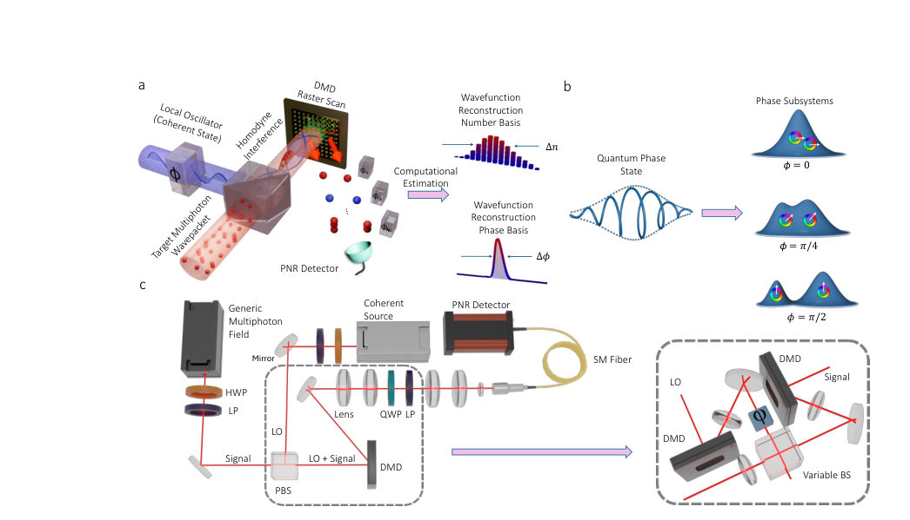
<figcaption class="paper-figure-caption"><b>Fig 1.</b> FIG. 1. Spatially-photon-number-resolved homodyne tomography. As illustrated in a, we employ a new quantum state tomography scheme that combines homodyne interferometry with photon-number-resolving (PNR) detection to reconstruct the complementary photon-number and phase bases of an optical field. This information enables us to select both the constituent multiphoton (photon-number) subsystems that form an optical field and multiphoton phase states with specific phase values. As shown in b, this capability enables us to extract multiphoton phase states with well-defined phases from an arbitrary optical field. The experimental implementation is shown in c. The unknown signal and a coherent...</figcaption>
</figure>
<figure class="paper-figure-card">
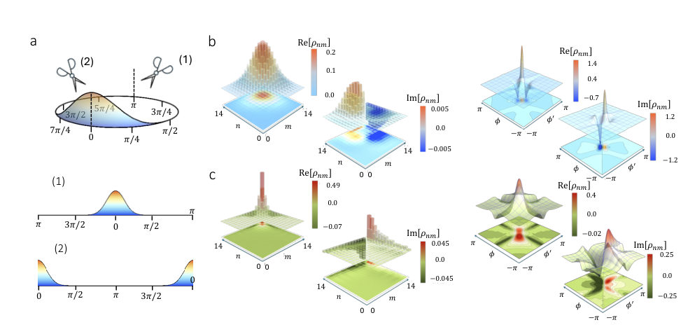
<figcaption class="paper-figure-caption"><b>Fig 2.</b> FIG. 2. Quantum state tomography of multiphoton fields in the number and phase bases. The periodic nature of quantum phase prevents its direct characterization through a linear average of phase values. As illustrated in a, because phase is defined on a circle, the inferred mean can depend strongly on the arbitrary position of the phase reference, here shown for two different choices of the 2π boundary. The trigonometric observables ˆC and ˆS circumvent this ambiguity by providing a representation that preserves the periodicity of phase. Using these observables, our tomography enables the reconstruction of multiphoton fields in the complementary photon-number and phase bases. As shown in b,...</figcaption>
</figure>
<figure class="paper-figure-card">
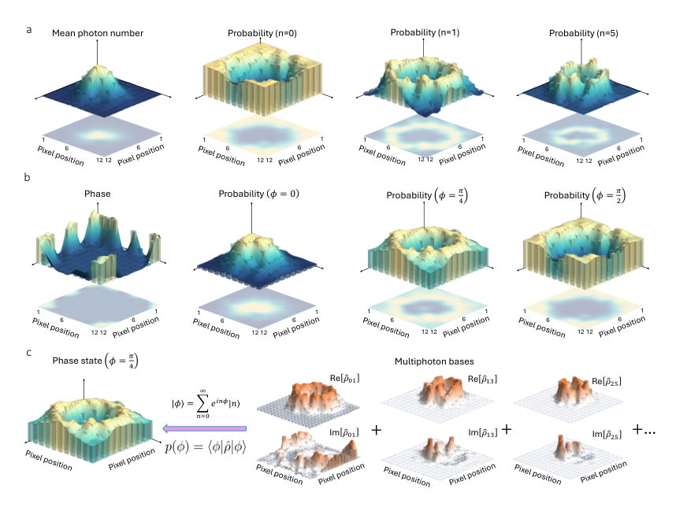
<figcaption class="paper-figure-caption"><b>Fig 3.</b> FIG. 3. Number–phase Fourier duality in spatially resolved multiphoton fields. Our spatially resolved quantum state tomography reveals the complementary photon-number and phase structure of a multiphoton field. As shown in a, we demonstrate the possibility of distilling the constituent multiphoton subsystems of a classical light field from its mean photon-number (intensity) distribution. This capability is illustrated for n = 0, 1, and 5, revealing distinct spatial distributions for each multiphoton subsystem. The complementary phase representation is shown in b, where the reconstructed quantum phase is resolved into multiphoton phase subsystems with well-defined values ϕ = 0, π/4, and π/2....</figcaption>
</figure>
<figure class="paper-figure-card">
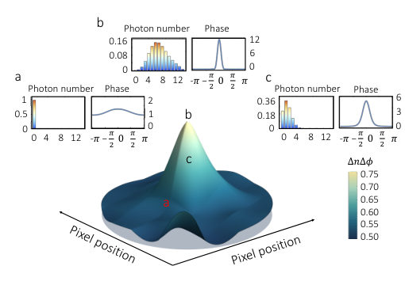
<figcaption class="paper-figure-caption"><b>Fig 4.</b> FIG. 4. Mapping the number–phase uncertainty of a multiphoton field. Our spatially resolved quantum state tomography enables the direct experimental characterization of the number–phase uncertainty product, ∆n∆ϕ, across a co- herent multiphoton field. The measured uncertainty exhibits a pronounced spatial dependence, approaching the lower bound in regions of low photon number and increasing toward the center of the field. The photon-number and phase distribu- tions at representative positions a–c reveal the complementary fluctuations underlying this behavior. In a, the low photon- number region is dominated by the vacuum contribution and accompanied by a broad phase distribution. Toward the...</figcaption>
</figure>
</div>

<p><strong>Summary.</strong> This paper reports the first experimental measurement of the quantum phase in multiparticle photonic systems containing up to fifteen particles. By combining homodyne interferometry with photon-number-resolving detection, the authors established the number-phase uncertainty relation. This work provides a vital operational tool for characterizing quantum phase in complex quantum optical systems.</p>
<p><strong>Why it may be interesting.</strong> This work provides a crucial experimental methodology for characterizing quantum phase in complex photonic systems, which is fundamental for understanding quantum correlations and developing quantum information protocols.</p>
<details>
<summary>Detailed structure</summary>
<p><strong>Main problem.</strong> The quantum phase of multiparticle systems is poorly understood due to the lack of a suitable phase operator, preventing the formulation of a meaningful uncertainty relation with particle number.</p>
<p><strong>Main result.</strong> The authors successfully measured the quantum phase of up to fifteen-particle photonic systems, establishing the number-phase uncertainty relation and providing an operational framework for phase measurement.</p>
<p><strong>Method.</strong> They employed a novel quantum state tomography scheme combining homodyne interferometry with photon-number-resolving detection to reconstruct complementary photon-number and phase representations.</p>
<p><strong>Model / system.</strong> The study focuses on multiparticle photonic systems, analyzing the quantum state density matrix ($\hat{
ho}$) in both the Fock (number) and phase bases.</p>
<p><strong>Key observables.</strong> Quantum phase ($\phi$), photon number ($n$), and the derived trigonometric observables ($\hat{C}$ and $\hat{S}$) used to characterize phase.</p>
<p><strong>Important parameters / regimes.</strong> Up to fifteen particles; the number-phase uncertainty relation ($\Delta n \Delta \phi \geq \dots$).</p>
<p><strong>Assumptions / limitations.</strong> The necessity of constructing Hermitian trigonometric observables ($\hat{C}, \hat{S}$) because the initial phase operator ($\hat{E}$) is not Hermitian.</p>
<p><strong>Figures summary.</strong> Figures illustrate the setup for spatially-resolved tomography combining homodyne interferometry and PNR detection, and show the number-phase Fourier duality in spatially resolved fields.</p>
<p><strong>Paper structure.</strong> The paper develops the theoretical framework for phase operators ($\hat{E}, \hat{C}, \hat{S}$), details the measurement technique (homodyne/PNR tomography), derives the number-phase uncertainty relation, and finally applies this framework to measure and map the phase in multiparticle systems.</p>
</details>
<details>
<summary>Abstract</summary>
<p>The quantum phase of a multiparticle system has remained a long-standing mystery in quantum physics. The absence of a phase operator that faithfully represents this physical quantity has prevented the formulation of a meaningful uncertainty relation with particle number. Here, we resolve this problem by measuring, for the first time, the quantum phase of multiparticle systems containing up to fifteen particles. We achieve this through a new quantum state tomography scheme that combines homodyne interferometry with photon-number-resolving detection. This approach enables us to reconstruct complementary photon-number and phase representations and establish the corresponding number-phase uncertainty relation. Our measurements further provide access to the mutually unbiased basis of a multiparticle system, a fundamental resource for multiparticle quantum information processing. Furthermore, we report the spatially resolved characterization of the quantum phase. These results provide an operational framework for measuring quantum phase in multiparticle systems, with implications for fundamental quantum physics and scalable multiparticle quantum technologies.</p>
</details>
<p><sub><a href="#top">↑ back to top</a></sub></p>

<p><a id="paper-2610.25557"></a></p>
<h3 id="signatures-of-slow-particle-transport-in-the-interacting-aubry-andre-chain"><a href="http://arxiv.org/abs/2610.25557v1">Signatures of slow particle transport in the interacting Aubry-André chain</a></h3>
<p><strong>Authors:</strong> S. Sharifan, M. Kiefer-Emmanouilidis, J. Sirker<br>
<strong>Type:</strong> theory · <strong>Category:</strong> disordered systems and neural networks · <strong>PDF:</strong> <a href="https://arxiv.org/pdf/2610.25557v1">https://arxiv.org/pdf/2610.25557v1</a><br>
<strong>Analysis basis:</strong> full PDF text, analyzed in chunks
<strong>Topic relevance:</strong> 🔥 <code>scars &amp; prethermalization</code> <strong>4/5</strong> · <code>analog quantum simulation</code> <strong>3/5</strong> · <code>non-equilibrium universality</code> <strong>3/5</strong> · <code>Frenkel-Kontorova</code> <strong>2/5</strong> · <code>quantum measurements</code> <strong>1/5</strong></p>
<div class="figure-strip-hint">↔ Scroll figures horizontally</div>
<div class="paper-figures-scroll">
<figure class="paper-figure-card">
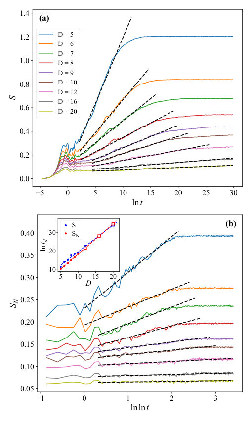
<figcaption class="paper-figure-caption"><b>Fig 1.</b> FIG. 1. Time evolution of entanglement entropy S and num- ber entropy SN for system size L = 16 and various potential strengths D. The initial state is a N´eel state and results are averaged over R = 10000 realizations. (a) S ∼µ ln t at in- termediate times with decreasing µ for increasing potential strengths D, followed by finite-size saturation at long times. (b) SN ∼ν ln ln t at intermediate times followed by satura- tion. Inset: Deviation times td ∼eaD with almost identical exponents a for S and SN.</figcaption>
</figure>
<figure class="paper-figure-card">
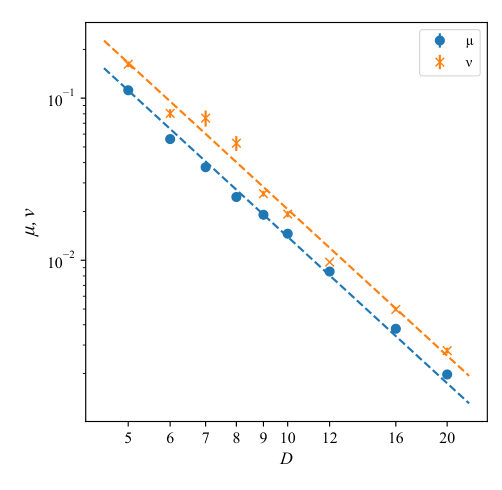
<figcaption class="paper-figure-caption"><b>Fig 2.</b> FIG. 2. Scaling of the parameters µ and ν as a function of the potential strength D extracted from fits S ∼µ ln t and SN ∼ν ln ln t. Both parameters show the same power-law scaling µ ∼ν ∼D−γ consistent with γ ≈3, see dashed lines.</figcaption>
</figure>
<figure class="paper-figure-card">
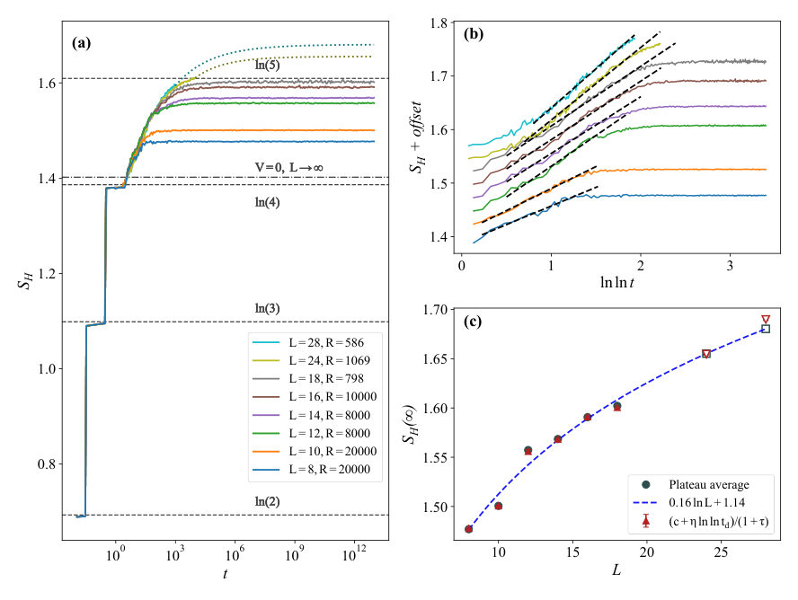
<figcaption class="paper-figure-caption"><b>Fig 3.</b> FIG. 3. (a) SH(t) for D = 7 and system sizes L = 8, 10, 12, 14, 16, 18 obtained from ED and L = 24, 28 from a Trotter-Suzuki decomposition of the time evolution operator. The continuations of the L = 24, 28 curves are guides to the eye connecting the data to the saturation values predicted in panel (c). The number of potential realizations R is given in the legend. The non-interacting model (V = 0) saturates at SH ≈1.40 for L →∞. (b) The same data shown against ln ln t with a constant offset 0.025 and fits to SH(t) = c+η ln ln t; the fit parameters c, η are extracted independently for each L. (c) Saturation values SH(t →∞) as a function of L. Filled blue circles: late-time average of the L...</figcaption>
</figure>
<figure class="paper-figure-card">
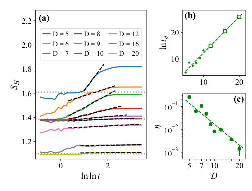
<figcaption class="paper-figure-caption"><b>Fig 4.</b> FIG. 4. Hartley number entropy SH(t) of the Aubry-Andr´e chain with V = 1 and L = 16 for disorder strength D = 5 −20, averaged over 10,000 disorder realizations. (a) SH ∼ η ln ln t at intermediate times with decreasing η for increasing potential strength. (b) Deviation times td, defined as times at which the data deviate from the ln ln-fit by 10%, scale as td ∼eaD. For D = 12, 16, 20 the simulations do not reach saturation and the values are obtained by extrapolation. (c) The prefactor η as a function of D. The dashed line indicates η ∼D−3.</figcaption>
</figure>
<figure class="paper-figure-card">
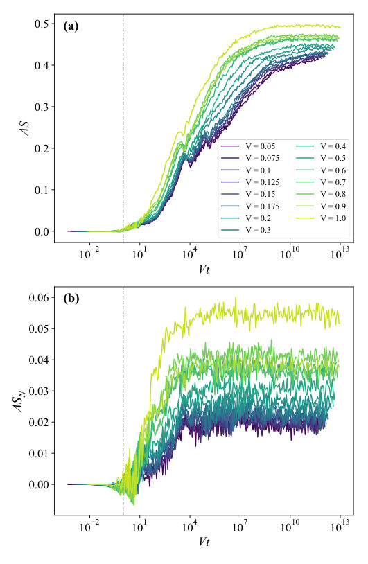
<figcaption class="paper-figure-caption"><b>Fig 5.</b> FIG. 5. (a) Entanglement entropy ∆S = S −S0, where S0 is the entanglement entropy for V = 0, plotted as a function of V t for interaction strengths V ∈[0.05, 1] and D = 7. (b) Same as in (a) for the number entropy ∆SN.</figcaption>
</figure>
</div>

<p><strong>Summary.</strong> This study investigates the origin of slow particle transport in interacting quantum chains by comparing quasi-periodic and disordered systems. Using entropy measures, the authors show that the slow dynamics observed are robust and stem from a mechanism independent of rare-region resonances. This challenges current understanding of MBL stability by identifying a universal obstruction in the thermodynamic limit.</p>
<p><strong>Why it may be interesting.</strong> The work directly addresses the stability of Many-Body Localized (MBL) phases by providing evidence that slow transport persists even when the mechanisms previously thought necessary (like rare resonances) are explicitly removed.</p>
<details>
<summary>Detailed structure</summary>
<p><strong>Main problem.</strong> The paper aims to distinguish between two mechanisms causing slow particle transport in strongly disordered quantum chains: rare resonances/avalanches or an energy-independent combinatorial path-entropy obstruction.</p>
<p><strong>Main result.</strong> The slow transport signatures observed in the quasi-periodic Aubry-André chain are quantitatively similar to those in quenched disorder, suggesting a common origin independent of rare-region avalanches.</p>
<p><strong>Method.</strong> Numerical simulation of time evolution following a quantum quench, calculating entanglement entropy, number entropy, and Hartley number entropy.</p>
<p><strong>Model / system.</strong> The interacting Aubry-André chain is studied, featuring a quasiperiodic potential $D_j = D \cos(2\pieta j + \phi)$ applied to spinless fermions at half filling.</p>
<p><strong>Key observables.</strong> Entanglement entropy $S(t)$, Number entropy $S_N(t)$, and Hartley number entropy $S_H(t)$; their growth rates ($\mu, 
u$) and saturation values ($\ln L$).</p>
<p><strong>Important parameters / regimes.</strong> Disorder strength $D$, system size $L$, and the quasiperiodicity parameter $eta$ (golden ratio).</p>
<p><strong>Assumptions / limitations.</strong> The quasi-periodic potential is constructed to eliminate rare regions responsible for avalanche instabilities, allowing a clean test of the underlying transport mechanism.</p>
<p><strong>Figures summary.</strong> Figures illustrate the logarithmic and double-logarithmic growth of entropies ($S(t) \sim \mu \ln t$, $S_N(t) \sim 
u \ln \ln t$) and the linear growth of $S_H$ with system size ($\ln L$), comparing quasi-periodic and disordered cases.</p>
<p><strong>Paper structure.</strong> The paper establishes the physical problem by contrasting two theoretical origins for slow transport. It then applies numerical methods to the interacting Aubry-André chain, calculating various entropy measures. The core of the work is comparing the scaling laws and saturation behaviors between the quasi-periodic and quenched disorder limits to draw a conclusion about the universal nature of the slow transport mechanism.</p>
</details>
<details>
<summary>Abstract</summary>
<p>Slow delocalization in strongly disordered many-body quantum chains can originate from two distinct mechanisms: rare resonances and avalanches, rooted in the energy statistics, or an energy-independent combinatorial path-entropy obstruction in operator space. Quasiperiodic potentials eliminate rare regions with similar potentials that are thought to be responsible for avalanche instabilities and modify the statistics of resonances, thus allowing us to delineate the two mechanisms. To do so, we numerically study the entanglement entropy $S(t)$, number entropy $S_N(t)$, and Hartley number entropy $S_H(t)$ following a quantum quench in the interacting Aubry-André chain with disorder strength $D$. We find $S(t)\simμ\ln t$, $S_N(t)\simν\ln\ln t$ with growth rates $μ\simν\sim D^{-γ}$ and $γ\approx 3$, the same behavior that was previously found in the case of quenched disorder. Furthermore, the saturation values $S_H(t\to\infty)$ continue to grow with system size $L$ as $\ln L$, a growth that persists for $D\gtrsim 8$ where MBL was argued to be stable. The similarity of the quasi-periodic and quenched disorder cases points to a common origin of the slow particle transport that does not rely on rare-region avalanches and persists despite strongly modified resonance statistics.</p>
</details>
<p><sub><a href="#top">↑ back to top</a></sub></p>

<p><a id="paper-2610.25976"></a></p>
<h3 id="conjugate-measurement-induced-evolution-towards-maximally-mixed-states-in-quadratic-quantum-systems"><a href="http://arxiv.org/abs/2610.25976v1">Conjugate measurement-induced evolution towards maximally mixed states in quadratic quantum systems</a></h3>
<p><strong>Authors:</strong> S. Adarsh, T. P. Sreeraj<br>
<strong>Type:</strong> theory · <strong>Category:</strong> statistical mechanics · <strong>PDF:</strong> <a href="https://arxiv.org/pdf/2610.25976v1">https://arxiv.org/pdf/2610.25976v1</a><br>
<strong>Analysis basis:</strong> full PDF text, analyzed in chunks
<strong>Topic relevance:</strong> 🔥 <code>quantum measurements</code> <strong>4/5</strong> · <code>scars &amp; prethermalization</code> <strong>2/5</strong> · <code>Keldysh / 2PI / non-Gaussian methods</code> <strong>1/5</strong> · <code>analog quantum simulation</code> <strong>1/5</strong> · <code>correlated / nonlocal dissipation</code> <strong>1/5</strong> · <code>driven-dissipative phase transition</code> <strong>1/5</strong> · <code>methods for driven-dissipative</code> <strong>1/5</strong> · <code>non-equilibrium universality</code> <strong>1/5</strong></p>
<div class="figure-strip-hint">↔ Scroll figures horizontally</div>
<div class="paper-figures-scroll">
<figure class="paper-figure-card">
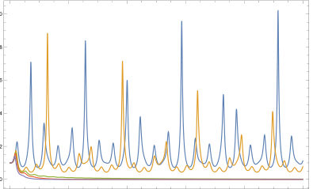
<figcaption class="paper-figure-caption"><b>Fig 1.</b> FIG. 2. Time evolution of the spectral norm of A−1(t), at dif- ferent values of the coupling strength relative to the critical coupling gc. At g &lt; gc, it remains oscillatory and does not approach zero. While at g &gt; gc, ∥A−1(t)∥2 decays towards zero, which illustrates the mechanism by which nonzero sub- system phase-space separations are suppressed to zero.</figcaption>
</figure>
</div>

<p><strong>Summary.</strong> This paper develops a rigorous theory showing how a quantum subsystem can approach a maximally mixed state purely through unitary evolution when coupled to an environment. It analyzes this phenomenon in quadratic systems, distinguishing between free-particle and harmonic oscillator dynamics. By using phase-space tools and regularization, the authors establish a clear phase-space mechanism for this non-equilibrium equilibration.</p>
<p><strong>Why it may be interesting.</strong> This work provides a rigorous, purely unitary, and non-equilibrium mechanism for quantum thermalization in simple, exactly solvable models, which is highly relevant for understanding open quantum systems dynamics in quantum optics and AMO physics.</p>
<details>
<summary>Detailed structure</summary>
<p><strong>Main problem.</strong> The paper investigates the mechanism by which a reduced quantum subsystem approaches a maximally mixed state through strictly unitary dynamics, mimicking thermalization.</p>
<p><strong>Main result.</strong> The reduced subsystem asymptotically approaches a maximally mixed state in both free-particle and harmonic oscillator models, with the mechanism depending on whether the dynamics induce phase-space shear or hyperbolic expansion.</p>
<p><strong>Method.</strong> The analysis uses phase-space representations, specifically tracking the reduced Wigner function and Weyl characteristic function, and employs finite-volume regularization to rigorously define the continuum limit.</p>
<p><strong>Model / system.</strong> The system is a quadratic quantum system partitioned into a subsystem (S) and an environment (E), modeled by a total quadratic Hamiltonian. The dynamics are governed by linear Heisenberg equations.</p>
<p><strong>Key observables.</strong> Reduced Wigner function (WS), Weyl characteristic function ($\chi$), and the measure of local Wigner flattening ($\Delta_K(t)$).</p>
<p><strong>Important parameters / regimes.</strong> Coupling constant ($g$), critical coupling value ($g_c$), and regularization parameters (finite volume $L$, momentum cutoff $N$).</p>
<p><strong>Assumptions / limitations.</strong> The analysis requires finite-volume and momentum regularization to make the maximally mixed state mathematically precise, and the underlying Hamiltonian is assumed to be quadratic.</p>
<p><strong>Paper structure.</strong> The paper builds from general quadratic dynamics (Chunk 1) to detailed mathematical tools like Wigner/Weyl functions and environmental tracing (Chunk 2). It then analyzes the transition between dynamical regimes (e.g., critical coupling) and proves local Wigner flattening in the hyperbolic regime (Chunk 3). Finally, it situates the work within the broader literature of quantum relaxation (Chunk 4).</p>
</details>
<details>
<summary>Abstract</summary>
<p>In an earlier work, we showed that, in the interaction-dominant setting, coupling the conjugate variables of a subsystem to distinct environment modes drives the subsystem to a maximally mixed state. Here, we extend the study to the full quadratic dynamics of a single-mode subsystem coupled to a two-mode environment, and identify the phase-space mechanism responsible for the asymptotic behavior. By tracking the exact reduced Weyl characteristic and Wigner functions, we demonstrate that they lose their dependence on local phase-space coordinates on every fixed compact region. In free-particle model, this happens for all values of coupling, whereas in the harmonic oscillator model, it happens above a critical value of the coupling. Under a finite-volume and momentum regularization, this behavior corresponds to the reduced subsystem approaching a maximally mixed state.</p>
</details>
<p><sub><a href="#top">↑ back to top</a></sub></p>

<p><a id="paper-2610.26428"></a></p>
<h3 id="systemic-collapse-emergence-from-climate-induced-perturbations-in-transportation-networks"><a href="http://arxiv.org/abs/2610.26428v1">Systemic collapse emergence from climate-induced perturbations in transportation networks</a></h3>
<p><strong>Authors:</strong> Mauro Faccin, Tomas Scagliarini, Manlio De Domenico<br>
<strong>Type:</strong> theory · <strong>Category:</strong> statistical mechanics · <strong>PDF:</strong> <a href="https://arxiv.org/pdf/2610.26428v1">https://arxiv.org/pdf/2610.26428v1</a><br>
<strong>Analysis basis:</strong> full PDF text, analyzed in chunks
<strong>Topic relevance:</strong> 🔥 <code>non-equilibrium universality</code> <strong>4/5</strong> · <code>driven-dissipative phase transition</code> <strong>3/5</strong> · <code>Keldysh / 2PI / non-Gaussian methods</code> <strong>2/5</strong> · <code>methods for driven-dissipative</code> <strong>2/5</strong> · <code>Frenkel-Kontorova</code> <strong>1/5</strong></p>
<div class="figure-strip-hint">↔ Scroll figures horizontally</div>
<div class="paper-figures-scroll">
<figure class="paper-figure-card">
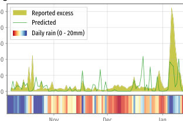
<figcaption class="paper-figure-caption"><b>Fig 1.</b> Figure 2: Daily delay validation for 2024. Time-series of rain, predicted delays and reported excess delays for IRN (a) and CRN (c). Comparison of predicted daily delays and reported excess delay for IRN (b) and for CRN (d). Color and size correspond to the cumulative amount of rain experienced by the railway system in each day. During early September and October, overlapping lines of panel a partially obscure the agreement, which becomes apparent in panel b. One can notice in b (IRN) how, in rainy days (blue dots), the predicted delay correlates to the reported excess of delay. In the high-speed Chinese railway system, rainfalls along the costal line do not affect the functionality of the...</figcaption>
</figure>
<figure class="paper-figure-card">
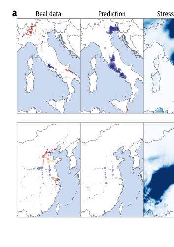
<figcaption class="paper-figure-caption"><b>Fig 2.</b> Figure 3: Local daily delay validation in rainy days. Two rainy days: 9th of Sept. 2024 from IRN (above) and 6th of Jan. 2020 from CRN (below). Notice how nodes with predicted delays (a center) concentrate in and around the areas with strong external stressor field (a right). Node size is proportional to the real or predicted delay (a) or to the capacity (b). The Spearman’s coefficient is computed on stations with nonzero delay. Horizontal blue lines represent the confidence interval of each point.</figcaption>
</figure>
<figure class="paper-figure-card">

<figcaption class="paper-figure-caption"><b>Fig 3.</b> Figure 4: Steady state distribution of the model under a constant external stressor field. Distribution of delay (size) on the map and its ag- gregation on a hexagonal lattice (a) with an external stressor field of 10 mm of hourly rain. The weak correlation of the steady state with degree distribu- tion and betweenness centrality (b) shows the shortcoming of topology only indicators. The steady state phase diagram (c) includes three phases marked by color codes (no delay (pink), endemic finite state attractor (white), de- lay diverges to infinity (gray)). Phases are separated by the propagation and the disruption thresholds (dashed lines correspond to the approximate theoretical...</figcaption>
</figure>
<figure class="paper-figure-card">

<figcaption class="paper-figure-caption"><b>Fig 4.</b> Figure 5: Perturbability of the system and social risk. Each node is perturbed by a strong external stressor field for a short period of time and left to evolve according to the model for 24 hours. High perturbability appears on the east part of Italy (a) and is compared to node capacity. In CRN (panel c), pertubability is driven by the station centrality. Left panels display the distribution of social risk for IRN (b) and CRN (d) on the country and is compared to node capacity. Node size and color on the maps represent degree and betweenness centrality respectively.</figcaption>
</figure>
</div>

<p><strong>Summary.</strong> This work models the systemic failure of critical infrastructure, such as railways, due to external stressors like heavy rainfall. It develops a coupled dynamical model incorporating diffusion, stressor generation, and system absorption to predict when localized perturbations lead to widespread collapse. The findings provide a quantitative framework for assessing infrastructure vulnerability under intensifying climate change impacts.</p>
<p><strong>Why it may be interesting.</strong> The framework of modeling system failure via coupled dynamics and identifying critical thresholds ($eta g > \gamma c$) mirrors concepts in non-equilibrium statistical mechanics, particularly those related to phase transitions and critical phenomena in complex systems.</p>
<details>
<summary>Detailed structure</summary>
<p><strong>Main problem.</strong> The paper investigates how complex human infrastructures, like transportation networks, undergo systemic collapse or significant delays when subjected to external, climate-induced perturbations.</p>
<p><strong>Main result.</strong> The developed model successfully captures critical behavior, showing that disruptions emerge above specific thresholds of external stressor intensity, allowing for quantitative risk assessment.</p>
<p><strong>Method.</strong> A coupled dynamical model is proposed that treats the network state evolution as a function of internal diffusion, external generation (stressor field), and internal absorption (capacity).</p>
<p><strong>Model / system.</strong> The system is a transportation network modeled by a differential equation coupling state dynamics $s(t)$ to external fields $\phi(x, t)$. The dynamics are governed by diffusion, generation, and absorption processes.</p>
<p><strong>Key observables.</strong> System perturbability, corresponding societal risk, and the order parameter $\langle s(t) 
angle$ (average perturbation).</p>
<p><strong>Important parameters / regimes.</strong> The coupling parameters $\alpha, eta, \gamma$, and the external stressor field intensity (e.g., rainfall strength).</p>
<p><strong>Assumptions / limitations.</strong> The model uses a linear diffusion approximation and simplifies real-world dynamics by neglecting complex operational rules like detailed dispatching or cancellations.</p>
<p><strong>Figures summary.</strong> Figures illustrate the three fundamental processes (diffusion, generation, absorption), show correlations between predicted and real delays on rainy days, and plot cumulative delays against stressor intensity to identify thresholds.</p>
<p><strong>Paper structure.</strong> The paper introduces the coupled dynamical model, applies it to case studies (railway networks), derives theoretical thresholds for collapse, validates the model against empirical delay data, and discusses limitations regarding multi-layer integration.</p>
</details>
<details>
<summary>Abstract</summary>
<p>The interaction between human infrastructures and external events results in loss of functionality or even complete system disruption through a snowball effect of cascading-failures. Their complex interplay challenges their prevention, affecting the human population that rely on their functionality. Understanding how these networks respond to external perturbations is crucial for predicting and mitigating the impacts of disruptive events. In particular, meteorological events, while not preventable, can have significant impacts on human infrastructure. Here, we propose a model coupling the dynamics of transportation systems to the dynamics of external events considered as fields, to capture at the same time the critical behavior of the former and the level of influence of the latter. The impact of rainfalls on real-world railway networks provides a compelling case study, showcasing local endemic and system-wide disruptions around a critical value of the rainfall strength. Remarkably, localized perturbations on the wider network reveals the local weaknesses of the global infrastructure, and we assess them in terms of system perturbability and corresponding societal risk. Our framework opens the door to the quantitative analysis of criticalities in essential human infrastructure imputable to vulnerabilities that are set to intensify due to climate change.</p>
</details>
<p><sub><a href="#top">↑ back to top</a></sub></p>

<p><a id="paper-2610.24160"></a></p>
<h3 id="trajectree-a-quantum-trajectory-based-quantum-circuit-simulator"><a href="http://arxiv.org/abs/2610.24160v1">Trajectree - A quantum trajectory-based quantum circuit simulator</a></h3>
<p><strong>Authors:</strong> Ansh Singal, Allen Zang, Jordan Thomas, Alexander Kolar, Anirudh Ramesh, Joaquin Chung, Rajkumar Kettimuthu, Prem Kumar<br>
<strong>Type:</strong> theory · <strong>Category:</strong> quantum information and computing · <strong>PDF:</strong> <a href="https://arxiv.org/pdf/2610.24160v1">https://arxiv.org/pdf/2610.24160v1</a><br>
<strong>Analysis basis:</strong> full PDF text, analyzed in chunks
<strong>Topic relevance:</strong> 🔥 <code>methods for driven-dissipative</code> <strong>4/5</strong> · 🔥 <code>quantum measurements</code> <strong>4/5</strong> · <code>analog quantum simulation</code> <strong>2/5</strong> · <code>correlated / nonlocal dissipation</code> <strong>1/5</strong> · <code>driven-dissipative phase transition</code> <strong>1/5</strong></p>
<div class="figure-strip-hint">↔ Scroll figures horizontally</div>
<div class="paper-figures-scroll">
<figure class="paper-figure-card">
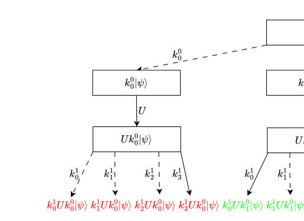
<figcaption class="paper-figure-caption"><b>Fig 1.</b> Fig. 1: Trajectree saving example</figcaption>
</figure>
<figure class="paper-figure-card">
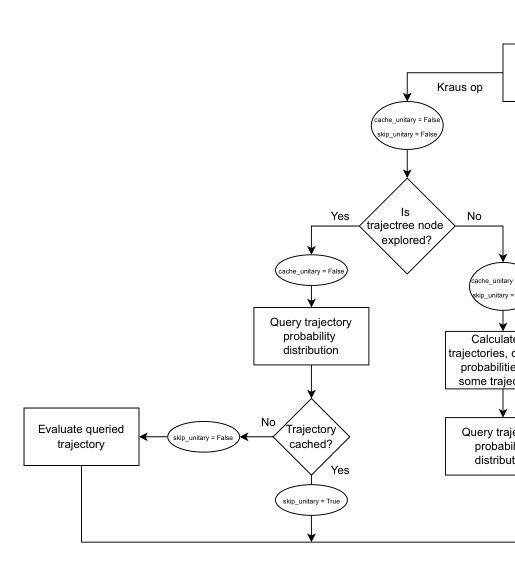
<figcaption class="paper-figure-caption"><b>Fig 2.</b> Fig. 2: Trajectory saving scheme</figcaption>
</figure>
<figure class="paper-figure-card">

<figcaption class="paper-figure-caption"><b>Fig 3.</b> Fig. 3: (a) Average time per sample for entanglement swap experiment. (b) Average time per sample by number of saved nodes.</figcaption>
</figure>
<figure class="paper-figure-card">
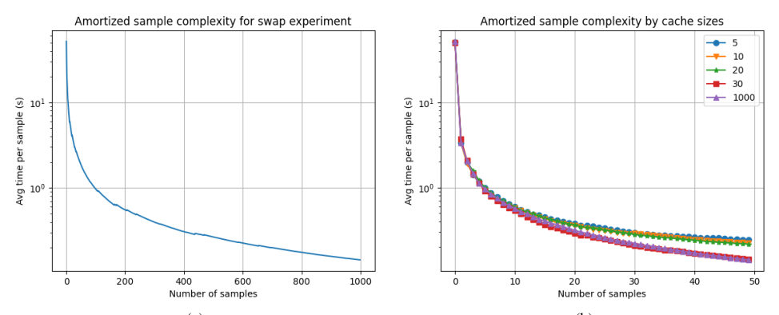
<figcaption class="paper-figure-caption"><b>Fig 4.</b> Fig. 9. We choose the entanglement swapping experiment for our benchmarks due to its pivotal role in optical entanglement distribution, sufficient computational complexity to analyze the simulator (it requires eight optical modes in tensor product) and variable parameters with physical relevance which allow testing a range of properties of the simulator. In summary, the entanglement swapping experiment performs a Bell state measurement between one of the modes of two independent entanglement generation sources, thereby entangling the remote modes. We further elaborate the experiment in Sec. V-B.</figcaption>
</figure>
<figure class="paper-figure-card">

<figcaption class="paper-figure-caption"><b>Fig 5.</b> Figure 5 (a) compares the wall clock time required to perform the entanglement swapping experiments described in Sec. V-B for multiple tensor network error tolerances (to understand the relationship between simulation accuracy and computational complexity).</figcaption>
</figure>
</div>

<p><strong>Summary.</strong> This paper introduces Trajectree, a novel quantum circuit simulator designed to efficiently handle deep and noisy open quantum systems. It achieves this by implementing a state-saving mechanism on quantum trajectories, drastically reducing the computational cost of Monte Carlo sampling. The simulator demonstrates superior performance on both general noisy circuits and complex quantum optical experiments.</p>
<p><strong>Why it may be interesting.</strong> This work directly addresses the computational bottleneck in simulating realistic, noisy quantum hardware (both superconducting and photonic), providing a scalable simulation tool for quantum information processing.</p>
<details>
<summary>Detailed structure</summary>
<p><strong>Main problem.</strong> The primary goal is to efficiently simulate broad and deep noisy quantum circuits, particularly those describing open quantum systems, which typically suffer from exponential scaling issues.</p>
<p><strong>Main result.</strong> The proposed simulator, Trajectree, achieves significant speedups (up to 5x faster than QSim) by implementing a novel state-saving partial execution scheme for quantum trajectories.</p>
<p><strong>Method.</strong> It utilizes a quantum trajectory-based simulation approach combined with a tree-like data structure that saves partially executed quantum trajectories to avoid redundant Monte Carlo sample calculations.</p>
<p><strong>Model / system.</strong> The simulator handles open quantum systems using Kraus operators, supporting both qubit and qudit systems. It features a dedicated optical backend for simulating photonic circuits, including entanglement swapping and optical CNOT gates.</p>
<p><strong>Key observables.</strong> Expectation values of observables (Tr[rho O]), entanglement visibility, and coincidence probabilities for optical gates.</p>
<p><strong>Important parameters / regimes.</strong> The efficiency gain is measured relative to standard simulators like Google's QSim; memory management is controlled using an MFU node replacement algorithm.</p>
<p><strong>Assumptions / limitations.</strong> The core assumption is that saving the most frequently encountered quantum trajectories provides a significant computational advantage over full density matrix evolution or naive trajectory sampling.</p>
<p><strong>Figures summary.</strong> Figures illustrate the trajectory graph showing cached vs. uncached paths, and performance comparisons showing speedups for benchmark circuits and optical experiments.</p>
<p><strong>Paper structure.</strong> The paper introduces the need for efficient open system simulation, details the Trajectree architecture using trajectory saving, demonstrates its performance on standard noisy circuits, and validates its utility by simulating specific quantum optical experiments.</p>
</details>
<details>
<summary>Abstract</summary>
<p>We introduce Trajectree, a quantum trajectory-based quantum circuit simulator that uses a novel, state-saving partial execution of the quantum circuits to simulate broad and deep noisy quantum circuits efficiently. Trajectree can efficiently generate a large number of Monte Carlo samples by saving partially executed trajectories. We conduct extensive performance analysis of the Trajectree approach, proving the utility of the trajectory saving scheme for simulations of open quantum systems. Using this architecture, we show that Trajectree can simulate standard benchmark noisy circuits over five times faster than Google's QSim, a part of the Cirq package. We also analyze Trajectree's performance for simulating quantum optical systems relevant to communication and computing applications. We demonstrate applications of the optical backend to simulate three optical experiments: CHSH Bell test, entanglement swapping, and optical CNOT gate. This shows Trajectree's potential for simulating noisy qudit and optical systems efficiently.</p>
</details>
<p><sub><a href="#top">↑ back to top</a></sub></p>

<p><a id="paper-2610.25109"></a></p>
<h3 id="annealing-dynamics-of-the-two-dimensional-fully-frustrated-ising-model"><a href="http://arxiv.org/abs/2610.25109v1">Annealing Dynamics of the Two-Dimensional Fully Frustrated Ising Model</a></h3>
<p><strong>Authors:</strong> Kai-Hsin Wu, Anders W. Sandvik, Ying-Jer Kao<br>
<strong>Type:</strong> both · <strong>Category:</strong> statistical mechanics · <strong>PDF:</strong> <a href="https://arxiv.org/pdf/2610.25109v1">https://arxiv.org/pdf/2610.25109v1</a><br>
<strong>Analysis basis:</strong> full PDF text, analyzed in chunks
<strong>Topic relevance:</strong> 🔥 <code>non-equilibrium universality</code> <strong>4/5</strong> · <code>analog quantum simulation</code> <strong>2/5</strong> · <code>methods for driven-dissipative</code> <strong>2/5</strong> · <code>driven-dissipative phase transition</code> <strong>1/5</strong> · <code>scars &amp; prethermalization</code> <strong>1/5</strong></p>
<div class="figure-strip-hint">↔ Scroll figures horizontally</div>
<div class="paper-figures-scroll">
<figure class="paper-figure-card">
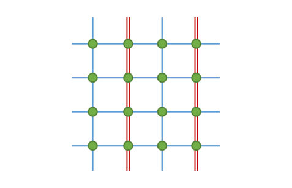
<figcaption class="paper-figure-caption"><b>Fig 1.</b> FIG. 1. The FFIM on the square lattice. The nearest- neighbor Ising interactions are ferromagnetic in the horizontal direction (blue bonds) while in the vertical direction they are alternating ferromagnetic (blue bonds) and antiferromagnetic (red double-line bonds).</figcaption>
</figure>
<figure class="paper-figure-card">
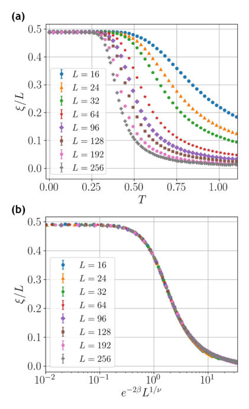
<figcaption class="paper-figure-caption"><b>Fig 2.</b> FIG. 2. (a) Equilibrium correlation length for different system sizes vs temperature. (b) Finite-size scaling of the data in (a) using ν = 1 in Eq. (17a).</figcaption>
</figure>
<figure class="paper-figure-card">
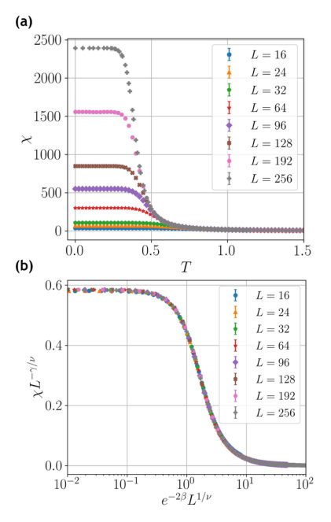
<figcaption class="paper-figure-caption"><b>Fig 3.</b> FIG. 3. (a) Temperature dependence of the susceptibility of the FFIM in equilibrium for different system sizes. (b) Finite-size scaling of the data in (a) using the known exponent γ/ν = 3/2 and ν = 1 in Eq. (17b).</figcaption>
</figure>
<figure class="paper-figure-card">
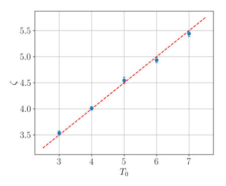
<figcaption class="paper-figure-caption"><b>Fig 4.</b> FIG. 5. The generalized KZ exponent ζ as a function of the initial temperature. The exponents ζ for different T0 were ex- tracted from the scaling collapse of susceptibility, exemplified for T0 = 3 in Fig. 4. The expected linear function ζ = 0.5T0+z is consistent with the data and a fit gives z = 1.99(2).</figcaption>
</figure>
<figure class="paper-figure-card">
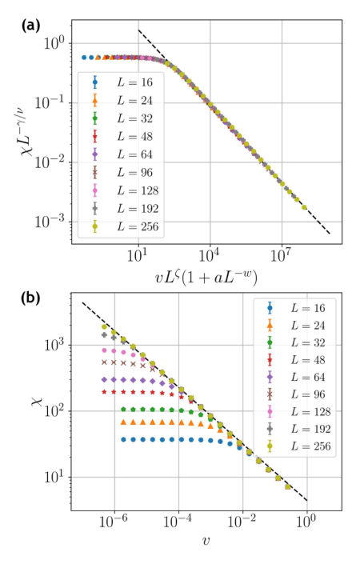
<figcaption class="paper-figure-caption"><b>Fig 5.</b> FIG. 4. (a) The susceptibility scaled according to Eq. (28) using the known exponent γ/ν = 3/2 and fitted exponents ζ = 3.53(4), w = 1.0(2). The dashed line indicates a power- law relation in the diabatic region with slope −x defined in Eq. (27). (b) SA results of the susceptibility as a function of the inverse annealing time for various system sizes L. The simulations were started at initial temperature T0 = 3.</figcaption>
</figure>
</div>

<p><strong>Summary.</strong> This paper analyzes the non-equilibrium dynamics of the 2D fully frustrated Ising model using simulated annealing. The authors adapt the Kibble-Zurek mechanism to account for the model's exponentially divergent correlation length near criticality. They find that the dynamic exponent $z$ is consistently close to 2 for various measured quantities, confirming theoretical expectations for relaxation dynamics.</p>
<p><strong>Why it may be interesting.</strong> The work provides a detailed study of non-equilibrium dynamics in a highly frustrated magnetic system, offering insights into how critical slowing down manifests when standard assumptions about the critical point (like finite $T_c$) are violated.</p>
<details>
<summary>Detailed structure</summary>
<p><strong>Main problem.</strong> The study investigates the dynamical scaling properties of the two-dimensional fully frustrated Ising model (FFIM) by simulating its annealing dynamics.</p>
<p><strong>Main result.</strong> The dynamic exponent $z$ is found to be consistently close to 2 across different observables (susceptibility, excess energy, EA order parameter), suggesting the applicability of generalized Kibble-Zurek scaling laws even for systems with exponentially divergent correlation lengths.</p>
<p><strong>Method.</strong> The research employs Monte Carlo simulations, specifically using simulated annealing protocols, and compares the results against theoretical scaling forms derived from the Kibble-Zurek mechanism.</p>
<p><strong>Model / system.</strong> The system is the two-dimensional fully frustrated Ising model (FFIM) on a square lattice, characterized by specific ferromagnetic and alternating bonds. It is known for its highly degenerate, critical ground state at zero temperature.</p>
<p><strong>Key observables.</strong> Dynamic exponent ($z$), susceptibility ($\chi$), excess energy density ($\Delta E$), and the Edwards-Anderson (EA) order parameter ($q_2$).</p>
<p><strong>Important parameters / regimes.</strong> Initial temperature ($T_{initial}$ or $eta_0$), system size ($L$), and annealing velocity ($v$).</p>
<p><strong>Assumptions / limitations.</strong> The analysis extends the Kibble-Zurek mechanism to handle the exponential divergence of the correlation length as $T 	o 0$, which requires modifying standard scaling assumptions.</p>
<p><strong>Figures summary.</strong> Figures illustrate data collapse for equilibrium scaling (e.g., $\chi$ vs $T$) and show the scaling of various observables (susceptibility, energy, $q_2$) as a function of annealing velocity ($v$) for different system sizes ($L$).</p>
<p><strong>Paper structure.</strong> The paper first establishes the model and the need to adapt the KZ mechanism. It then analyzes equilibrium scaling using the exponential divergence variable $\lambda$. Finally, it applies the generalized scaling forms to the annealing dynamics to extract the dynamic exponent $z$ for multiple observables.</p>
</details>
<details>
<summary>Abstract</summary>
<p>We study the dynamical scaling properties of the two-dimensional fully frustrated Ising model by simulated annealing. The model has a highly degenerate, critical ground state with well known equilibrium properties. To study its out-of-equilibrium behavior, we develop an annealing protocol that is convenient for extending the Kibble-Zurek mechanism to the case of an exponentially divergent correlation length in the limit of the temperature $T \to T_c = 0$. We find excellent agreement with the scaling forms derived, including a dependence on the initial temperature that is not present in the conventional Kibble-Zurek mechanism. The dynamic exponent $z$ is consistent among all quantities studied; fits of its dependence on the initial temperature give $z = 1.99(2)$ (susceptibility), $z = 2.072(8)$ (excess energy), and $z = 2.09(3)$ (Edwards-Anderson order parameter). These values are close to $z=2$, which is consistent with previous studies of relaxation after instantaneous quenches and of time dependent correlations in equilibrium, including the estimate $z = 2.004(9)$ from equilibrium autocorrelation functions.</p>
</details>
<p><sub><a href="#top">↑ back to top</a></sub></p>

<p><a id="paper-2610.24755"></a></p>
<h3 id="adiabatic-controlled-math122math-gate-for-neutral-atoms-with-forster-enhanced-rydberg-dressing"><a href="http://arxiv.org/abs/2610.24755v1">Adiabatic controlled-$Z$ gate for neutral atoms with Förster-enhanced Rydberg dressing</a></h3>
<p><strong>Authors:</strong> Diksha Thapliyal, Ajay Wasan<br>
<strong>Type:</strong> theory · <strong>Category:</strong> other · <strong>PDF:</strong> <a href="https://arxiv.org/pdf/2610.24755v1">https://arxiv.org/pdf/2610.24755v1</a><br>
<strong>Analysis basis:</strong> full PDF text, analyzed in chunks
<strong>Topic relevance:</strong> 🔥 <code>Rydberg arrays</code> <strong>4/5</strong> · <code>analog quantum simulation</code> <strong>3/5</strong> · <code>QC/QI experiment</code> <strong>2/5</strong></p>
<div class="figure-strip-hint">↔ Scroll figures horizontally</div>
<div class="paper-figures-scroll">
<figure class="paper-figure-card">
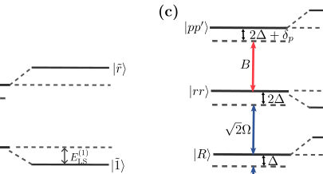
<figcaption class="paper-figure-caption"><b>Fig 1.</b> FIG. 1: Energy-level structure and Rydberg dressing for the CZ gate. (a) Bare level structure of two atoms separated by the interatomic distance R. The laser couples |1⟩to |r⟩with Rabi frequency Ωand detuning ∆, while the dipole-dipole interaction couples the pair states |rr⟩and |pp′⟩with strength B. (b) Single-atom dressing in the basis {|1⟩, |r⟩}. The dressed state |e1⟩connected to |1⟩acquires the light shift E(1) LS . (c) Two-atom dressing in the basis {|11⟩, |R⟩, |rr⟩, |pp′⟩}, where |R⟩= (|1r⟩+ |r1⟩)/ √</figcaption>
</figure>
<figure class="paper-figure-card">
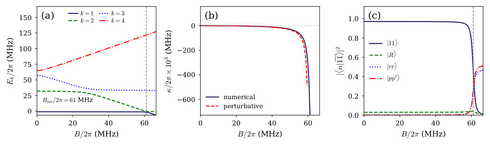
<figcaption class="paper-figure-caption"><b>Fig 2.</b> FIG. 2: Dressed state spectrum as a function of the pair coupling B, for Ω/2π = 8 MHz, ∆/2π = 32 MHz, and δp/2π = −6.9 MHz. (a) Dressed eigenenergies Ek/2π as functions of B/2π. The vertical dashed line indicates Bres/2π = 61 MHz, defined by the minimum energy gap between |f 11⟩and the nearest dressed state. (b) Effective dressed interaction κ obtained from the full Hamiltonian (blue solid) and from the perturbative expression in Eq. (6) (red dashed). (c) Bare-state probabilities of |f 11⟩for the basis states |11⟩, |R⟩, |rr⟩, and |pp′⟩.</figcaption>
</figure>
<figure class="paper-figure-card">

<figcaption class="paper-figure-caption"><b>Fig 3.</b> FIG. 3: Effective dressed interaction |κ|/∆× 103 (blue solid, left axis), dressed state gap Egap/∆between |f 11⟩and the nearest dressed state (red dashed, right axis), and Rydberg admixture PRyd of |f 11⟩(green dotted, right axis), as func- tions of the normalized pair coupling B/Bres for the same parameters as in Fig. 2. Here, Bres is defined by the min- imum of Egap. The horizontal dotted line shows reference value PRyd = 0.11, and the shaded region indicates the inter- val B/Bres ∈[0.80, 0.98].</figcaption>
</figure>
<figure class="paper-figure-card">

<figcaption class="paper-figure-caption"><b>Fig 4.</b> FIG. 4: CZ-gate performance at zero relative F¨orster defect (γ = 0) as functions of the peak dressing ratio α0 = Ωmax/∆and the normalized pair coupling β/βres. (a) Minimum adiabatic population P min adiab. (b) Conditional phase error (ϕCZ −π)/π. (c) Bell-state fidelity FBell. (d) Peak Rydberg state population P max Ryd . For each (α0, β/βres), the quantities are evaluated at the smallest complete-pulse duration for which ϕCZ(τgate) = π within α0τgate ≤160π. The red region in (d) satisfies ϕCZ = π, P min adiab ≥0.999, FBell ≥0.9999, and P max Ryd ≤0.11. The star marks the point with the smallest α0τgate within this region.</figcaption>
</figure>
<figure class="paper-figure-card">

<figcaption class="paper-figure-caption"><b>Fig 5.</b> FIG. 5: Dependence of the selected CZ-gate parameters on the relative F¨orster defect γ = δp/∆. (a) Pair coupling βres at the avoided crossing for α0 = 0.20, 0.25, 0.30, and 0.35. (b) Minimum α0τgate = ΩmaxT among the points satisfying the gate conditions at each γ. (c) Corresponding normalized pair coupling β/βres.</figcaption>
</figure>
</div>

<p><strong>Summary.</strong> This paper details the theoretical design of an adiabatic controlled-Z gate for neutral atoms by exploiting Förster-enhanced dipole-dipole coupling in Rydberg dressed states. The authors determine an optimal operating regime that maximizes the gate interaction while keeping the Rydberg excitation probability low. They rigorously analyze gate fidelity by accounting for both finite Rydberg lifetime and parasitic interactions from spectator atoms.</p>
<p><strong>Why it may be interesting.</strong> This work provides a detailed, quantitative roadmap for building quantum gates using highly controllable, long-range interactions inherent to Rydberg atoms, which is a cornerstone of modern quantum simulation and computing.</p>
<details>
<summary>Detailed structure</summary>
<p><strong>Main problem.</strong> The paper addresses the challenge of implementing an adiabatic controlled-Z (CZ) gate for neutral atoms by leveraging Förster-enhanced dipole-dipole coupling between Rydberg pair states.</p>
<p><strong>Main result.</strong> They identify an optimal operating range where the required conditional phase is accumulated with high fidelity while minimizing transient Rydberg population, and they quantify the error contributions from finite lifetime and spectator atoms.</p>
<p><strong>Method.</strong> The analysis uses time-dependent quantum simulation, tracking the evolution of dressed states under a smooth pulse, and calculating the accumulated conditional phase $\phi_{CZ}(T)$.</p>
<p><strong>Model / system.</strong> The system involves neutral atoms trapped in optical tweezers, using hyperfine ground states as qubits, with entanglement mediated by excitation to Rydberg states. The Hamiltonian models single-atom and two-atom interactions, incorporating the Förster defect $\delta_p$.</p>
<p><strong>Key observables.</strong> Conditional phase ($\phi_{CZ}$), Bell-state fidelity ($F_{Bell}$), maximum Rydberg population ($P_{max}^{Ryd}$), and spectator-induced phase shift ($\Delta F_{talk}$).</p>
<p><strong>Important parameters / regimes.</strong> Dipole-dipole coupling strength ($B$), Rabi frequency ($\Omega$), Förster defect ($\delta_p$), and pulse duration ($T$).</p>
<p><strong>Assumptions / limitations.</strong> The analysis assumes adiabatic evolution is possible in the identified operating range, and error sources are quantified separately (lifetime vs. spectator interaction).</p>
<p><strong>Figures summary.</strong> Figures illustrate the energy level structure and Rydberg dressing (Fig. 1), the dependence of the effective interaction $\kappa$ on coupling strength $B$ (Fig. 2, 3), and the time-dependent dynamics showing population evolution and phase accumulation (Fig. 9, 10).</p>
<p><strong>Paper structure.</strong> The paper first establishes the model and the role of Förster enhancement in generating the necessary interaction. It then analyzes the time-dependent dynamics to select optimal pulse parameters, followed by a detailed analysis of error sources, including spectator atom interactions.</p>
</details>
<details>
<summary>Abstract</summary>
<p>We study an adiabatic controlled-$Z$ (CZ) gate for neutral atoms in which dipole-dipole coupling between nearly degenerate Rydberg pair states enhances the interaction between dressed ground states. This coupling produces an avoided crossing in the two-atom dressed-state spectrum. Approaching the crossing enhances the dressed interaction, but also reduces the dressed-state gap and increases the Rydberg admixture. We identify a Förster-enhanced operating range in which the required conditional phase is accumulated with adiabatic return and small transient Rydberg population. We then analyze the finite-time dynamics of the two-qubit computational states under a smooth pulse. Reducing the dressing strength weakens the dressed interaction, so maintaining the target phase at the same pulse duration requires operation closer to the avoided crossing, where the Rydberg admixture increases. This dependence is then used to select the shortest gate at a fixed peak Rabi frequency in the Förster-enhanced operating range that accumulates the CZ phase with high Bell-state fidelity while keeping the Rydberg population small. Changing the Förster defect shifts the avoided crossing, while the gate parameters change only weakly. For a specific rubidium Förster channel, the selected gate corresponds to experimentally relevant laser coupling, pulse duration, and interatomic separation. We also estimate errors from the finite Rydberg lifetime and from weak excitation of a neighboring spectator atom. For the parameters considered, the spectator-induced error remains below the finite-lifetime contribution.</p>
</details>
<p><sub><a href="#top">↑ back to top</a></sub></p>

<p><a id="paper-2610.24091"></a></p>
<h3 id="trapped-ion-quantum-simulation-of-11d-su2-lattice-gauge-theory-via-loop-string-hadron-formulation"><a href="http://arxiv.org/abs/2610.24091v1">Trapped-ion quantum simulation of (1+1)D SU(2) lattice gauge theory via loop-string-hadron formulation</a></h3>
<p><strong>Authors:</strong> Toshiaki Kaji, Jesse R. Stryker, Yutaro Iiyama, Lento Nagano, Enrico Rinaldi, Christian W. Bauer, Koji Terashi<br>
<strong>Type:</strong> experiment · <strong>Category:</strong> other · <strong>PDF:</strong> <a href="https://arxiv.org/pdf/2610.24091v1">https://arxiv.org/pdf/2610.24091v1</a><br>
<strong>Analysis basis:</strong> full PDF text, analyzed in chunks
<strong>Topic relevance:</strong> 🔥 <code>QC/QI experiment</code> <strong>4/5</strong> · 🔥 <code>analog quantum simulation</code> <strong>4/5</strong></p>
<div class="figure-strip-hint">↔ Scroll figures horizontally</div>
<div class="paper-figures-scroll">
<figure class="paper-figure-card">

<figcaption class="paper-figure-caption"><b>Fig 1.</b> FIG. 1. The lattice and its degrees of freedom. (a) A de- piction of the lattice with four staggered sites, open bound- ary conditions, and a single unit of external flux sourced at the right-side boundary. (b) A depiction of the LSH de- grees of freedom relevant to the system. Each box corre- sponds to one qubit used to represent the indicated quantum numbers. (c) A cartoon illustration of the LSH basis state |(0, 1, 0), (0, 1, 1), (0, 0, 2), (1, 0, 1)⟩, with a certain set of spec- ified boundary flux values. Red dots are drawn to illustrate the Abelian Gauss’s law: the units of gauge flux at either end of a link must be balanced.</figcaption>
</figure>
<figure class="paper-figure-card">

<figcaption class="paper-figure-caption"><b>Fig 2.</b> FIG. 2. First-order Trotterized circuit for 4 lattice sites. Each labeled block represents the propagator associated with the indicated Hamiltonian subterm rather than an elementary gate. Blocks spanning multiple register lines indicate the qubits on which the corresponding subterm acts; they do not necessarily imply entangling operations between all of those qubits.</figcaption>
</figure>
<figure class="paper-figure-card">

<figcaption class="paper-figure-caption"><b>Fig 3.</b> FIG. 3. An example of error conversion in the hopping subterm H(j=1) I (r = 0). Registers i(r), o(r), ℓ(r) are assigned for ni(r), no(r), nℓ(r), respectively. The gray box represents the diagonal block, implemented using RZ and CX gates. (a) The original circuit without the error insertion. (b) A Z-error between H gates is converted into the X error, which is further propagated and spreads out. (c) A Z-error outside two H gates propagates and can change some angles, but is not converted to X-errors, at least in this subcircuit.</figcaption>
</figure>
<figure class="paper-figure-card">

<figcaption class="paper-figure-caption"><b>Fig 4.</b> FIG. 4. Estimated effective depolarizing-noise parameters ob- tained using the test circuits. The red squares, yellow trian- gles, and green inverted triangles correspond to the observ- ables on links 0, 1, and 2, respectively.</figcaption>
</figure>
<figure class="paper-figure-card">

<figcaption class="paper-figure-caption"><b>Fig 5.</b> FIG. 5. Discard rate and number of shots remaining after post-selection as functions of the number of Trotter steps. The black left vertical axis corresponds to the discard rate shown by black circles, while the red right vertical axis cor- responds to the number of remaining shots shown by red di- amonds.</figcaption>
</figure>
</div>

<p><strong>Summary.</strong> This work presents a quantum simulation of the SU(2) lattice gauge theory using trapped ions, employing the advanced loop-string-hadron formulation. By mapping the theory onto qubits, the authors simulate the time evolution of the electric field, demonstrating that current quantum hardware can tackle complex gauge theories while achieving substantial noise reduction through sophisticated error mitigation protocols.</p>
<p><strong>Why it may be interesting.</strong> The direct use of trapped ions to simulate a complex, non-Abelian lattice gauge theory is highly relevant, showcasing the capability of trapped-ion platforms to handle intricate, constrained many-body dynamics.</p>
<details>
<summary>Detailed structure</summary>
<p><strong>Main problem.</strong> The paper addresses the challenge of simulating interacting quantum field theories, specifically SU(2) lattice gauge theory, without relying on perturbative methods or encountering the sign problem.</p>
<p><strong>Main result.</strong> The authors successfully demonstrated that modern trapped-ion quantum hardware can simulate complex lattice gauge theories, achieving significant error reduction through advanced error mitigation techniques.</p>
<p><strong>Method.</strong> The simulation uses the loop-string-hadron (LSH) formulation to map the gauge theory Hamiltonian onto qubit operators, followed by Trotterized real-time quantum evolution.</p>
<p><strong>Model / system.</strong> The system is an SU(2) lattice gauge theory in 1+1 dimensions with one flavor of fermions. The simulation is implemented on the trapped-ion Quantinuum System Model H2, utilizing qubits to encode both bosonic gauge and fermionic matter degrees of freedom.</p>
<p><strong>Key observables.</strong> Time evolution of the electric-field energy density across the lattice.</p>
<p><strong>Important parameters / regimes.</strong> The simulation accesses the $j=1$ electric-flux sector, surpassing the typical $j_{	ext{max}}=1/2$ truncation, and uses a minimal four-site lattice.</p>
<p><strong>Assumptions / limitations.</strong> The simulation relies on the LSH formulation to manage Gauss's law constraints and employs error mitigation techniques like rescaling and post-selection to combat hardware noise.</p>
<p><strong>Figures summary.</strong> Figure 12 compares the calculated electric energy density over time, contrasting theoretical predictions with results obtained from a quantum emulator using raw, depolarizing error-mitigated, and post-selection error-mitigated measurements.</p>
<p><strong>Paper structure.</strong> The paper reviews the LSH setup, details the circuit construction and necessary optimizations, discusses the application of error mitigation techniques, and finally presents the simulation results using data from the H2-2 platform.</p>
</details>
<details>
<summary>Abstract</summary>
<p>We present a quantum simulation of the SU(2) lattice gauge theory in 1+1 dimensions with one flavor of fermions, performed using the trapped-ion Quantinuum System Model H2. This work is based on the loop-string-hadron (LSH) formulation of the gauge theory, and is distinguished by using qubits to represent both bosonic-gauge and fermionic-matter degrees of freedom. Furthermore, we access the $j=1$ electric-flux sector beyond the $j_{\max}=1/2$ truncation commonly used in SU(2) quantum simulations. To that end, we digitize an electric-field degree of freedom using a multiqubit register for representing the bosonic quantum number. Our simulation therefore synthesizes several key ingredients relevant to quantum simulations in higher spatial dimensions, in particular explicit local gauge-field degrees of freedom represented here by a multiqubit bosonic register, while relying solely on circuit-construction optimizations that are expected to scale polynomially with lattice size. This work demonstrates that modern quantum hardware is increasingly able to accommodate the features of complicated but physically important lattice gauge theories while successfully reproducing the expected Trotterized dynamics.</p>
</details>
<p><sub><a href="#top">↑ back to top</a></sub></p>

<p><a id="paper-2610.24434"></a></p>
<h3 id="beyond-low-dissipation-regime-general-condition-for-curzon-ahlborn-efficiency"><a href="http://arxiv.org/abs/2610.24434v1">Beyond low-dissipation regime: general condition for Curzon-Ahlborn efficiency</a></h3>
<p><strong>Authors:</strong> Yuki Izumida<br>
<strong>Type:</strong> theory · <strong>Category:</strong> statistical mechanics · <strong>PDF:</strong> <a href="https://arxiv.org/pdf/2610.24434v1">https://arxiv.org/pdf/2610.24434v1</a><br>
<strong>Analysis basis:</strong> full PDF text, analyzed in chunks
<strong>Topic relevance:</strong> 🔥 <code>non-equilibrium universality</code> <strong>4/5</strong> · <code>correlated / nonlocal dissipation</code> <strong>1/5</strong> · <code>driven-dissipative phase transition</code> <strong>1/5</strong></p>
<div class="figure-strip-hint">↔ Scroll figures horizontally</div>
<div class="paper-figures-scroll">
<figure class="paper-figure-card">

<figcaption class="paper-figure-caption"><b>Fig 1.</b> Low-resolution page preview, page 2</figcaption>
</figure>
<figure class="paper-figure-card">

<figcaption class="paper-figure-caption"><b>Fig 2.</b> Low-resolution page preview, page 3</figcaption>
</figure>
<figure class="paper-figure-card">

<figcaption class="paper-figure-caption"><b>Fig 3.</b> Low-resolution page preview, page 4</figcaption>
</figure>
<figure class="paper-figure-card">

<figcaption class="paper-figure-caption"><b>Fig 4.</b> Low-resolution page preview, page 5</figcaption>
</figure>
<figure class="paper-figure-card">

<figcaption class="paper-figure-caption"><b>Fig 5.</b> Low-resolution page preview, page 6</figcaption>
</figure>
</div>

<p><strong>Summary.</strong> This paper generalizes the analysis of heat engine efficiency beyond the standard low-dissipation approximation. By incorporating nonlinear heat transfer responses, the authors derive a general condition necessary for the recovery of the Curzon-Ahlborn efficiency at the quadratic order. This clarifies the physical requirements for efficiency universality in more realistic, non-linear thermodynamic settings.</p>
<p><strong>Why it may be interesting.</strong> This work provides a rigorous, non-equilibrium thermodynamic framework to understand the conditions for efficiency universality, which is crucial for understanding energy conversion processes in complex, non-linear systems.</p>
<details>
<summary>Detailed structure</summary>
<p><strong>Main problem.</strong> The study aims to derive a general condition under which the Curzon-Ahlborn (CA) efficiency is recovered at the quadratic order, extending the analysis beyond the standard low-dissipation regime.</p>
<p><strong>Main result.</strong> A general condition, $\kappa_h^2 \kappa_{h1} = \kappa_c^2 \kappa_{c1}$ (or its equivalent in other formulations), is derived for the recovery of CA efficiency, showing that this condition encompasses both the generalized symmetric dissipation case and the original CA model.</p>
<p><strong>Method.</strong> The authors use asymptotic expansions of heat absorbed ($Q_i$) in the inverse operation time ($1/	au_i$) and maximize the power output ($P$) with respect to the finite operation times ($  au_h,   au_c$).</p>
<p><strong>Model / system.</strong> The model is a heat engine operating between two heat baths ($T_h$ and $T_c$) over finite times, analyzed using a generalized heat-transfer law that includes nonlinear response terms.</p>
<p><strong>Key observables.</strong> Carnot efficiency ($\eta_C$), Curzon-Ahlborn efficiency ($\eta_{CA}$), and the efficiency expansion coefficients up to the quadratic order.</p>
<p><strong>Important parameters / regimes.</strong> Heat bath temperatures ($T_h, T_c$), operation times ($    au_h,   au_c$), and the coefficients ($\kappa_{i1}, \kappa_{i2}$) characterizing the nonlinear heat transfer.</p>
<p><strong>Assumptions / limitations.</strong> The analysis relies on asymptotic expansions up to quadratic order in $1/	au_i$, and the comparison involves specific models like the standard low-dissipation framework and the endoreversible CA model.</p>
<p><strong>Figures summary.</strong> Not specified in the notes, but the analysis involves deriving and comparing several mathematical conditions (e.g., Eq. 12 and Eq. 23) derived from power maximization.</p>
<p><strong>Paper structure.</strong> The paper progresses by first establishing the context of CA efficiency in the low-dissipation limit, then extending the model to include nonlinear response via a generalized heat-transfer law, and finally deriving the general condition that must be met for CA efficiency recovery in this extended regime.</p>
</details>
<details>
<summary>Abstract</summary>
<p>In recent years, physicists have extensively investigated the universality of Curzon-Ahlborn (CA) efficiency as the efficiency at maximum power of heat engines, which, like Carnot efficiency, is determined only by heat-bath temperatures. While the universality of the CA efficiency to the first order in the temperature difference is established within linear response theory in the inverse operation time, it is generally lost at quadratic order. In the low-dissipation Carnot heat engine model known as the standard framework, the symmetric dissipation condition is necessary. Yet, it is not a necessary condition as the original CA model that adopts endoreversibility does not require such symmetry. In this study, we extend the low-dissipation model to include nonlinear response in the inverse operation time and derive a general condition under which the CA efficiency is recovered in the quadratic order. The generalized symmetric dissipation condition and the CA model with Newton's law of cooling are shown to be special cases of this condition. By applying the obtained condition, we also clarify the condition under which an endoreversible model with a general heat-transfer law exhibits the CA efficiency.</p>
</details>
<p><sub><a href="#top">↑ back to top</a></sub></p>

<p><a id="paper-2610.24136"></a></p>
<h3 id="gate-defined-quantum-dot-and-charge-noise-analysis-in-a-forksheet-transistor"><a href="http://arxiv.org/abs/2610.24136v1">Gate-defined quantum dot and charge noise analysis in a Forksheet transistor</a></h3>
<p><strong>Authors:</strong> Dominic Leclerc, Claude Rohrbacher, Alexis Morel, Joffrey Rivard, Romain Ritzenthaler, Christian Lupien, Hans Mertens, Naoto Horiguchi, Eva Dupont-Ferrier<br>
<strong>Type:</strong> experiment · <strong>Category:</strong> quantum information and computing · <strong>PDF:</strong> <a href="https://arxiv.org/pdf/2610.24136v1">https://arxiv.org/pdf/2610.24136v1</a><br>
<strong>Analysis basis:</strong> full PDF text, analyzed in chunks
<strong>Topic relevance:</strong> 🔥 <code>QC/QI experiment</code> <strong>4/5</strong> · <code>quantum measurements</code> <strong>1/5</strong></p>
<div class="figure-strip-hint">↔ Scroll figures horizontally</div>
<div class="paper-figures-scroll">
<figure class="paper-figure-card">

<figcaption class="paper-figure-caption"><b>Fig 1.</b> Fig. 1. a) TEM image across the conduction channel of the Forksheet device from [15]. b) Illustration of the measurement setup with the measured Forksheet (FS) device at 10 mK.</figcaption>
</figure>
<figure class="paper-figure-card">

<figcaption class="paper-figure-caption"><b>Fig 2.</b> Fig. 2. Transfer characteristics of the Forksheet device as a function of temperature. a) Drain current IDS as a function of gate voltage VG at different temperatures, shown on a logarithmic scale (left axis) and a linear scale (right axis). b) Extracted subthreshold swing and threshold voltage as a function of temperature.</figcaption>
</figure>
<figure class="paper-figure-card">

<figcaption class="paper-figure-caption"><b>Fig 3.</b> Fig. 4. Example of a charge-noise measurement and comparison with other noise sources. a) Coulomb peak at VDS = 2 mV showing the three points of comparison. b) Power spectral density (PSD) measured at the three points of comparison, illustrating the range of validity of the charge-noise measurement and the Lorentzian spectral shape with a characteristic frequency f0 ∼0.1 Hz.</figcaption>
</figure>
<figure class="paper-figure-card">

<figcaption class="paper-figure-caption"><b>Fig 4.</b> Fig. 3. Measured stability diagram of the Forksheet device at T = 10 mK, with the electron filling identified from N = 0 to N = 5. The color scale represents the differential conductance G = ∂IDS/∂VDS in units of e2/h, computed numerically.</figcaption>
</figure>
</div>

<p><strong>Summary.</strong> This work reports the cryogenic characterization of a Forksheet transistor containing a gate-defined quantum dot. The authors successfully demonstrated transistor operation and observed clear Coulomb blockade features at millikelvin temperatures. Crucially, they measured the charge noise, achieving a low value comparable to state-of-the-art silicon spin qubits, highlighting the technology's potential for monolithic integration in future quantum processors.</p>
<p><strong>Why it may be interesting.</strong> The demonstration of low charge noise in a standard CMOS process flow, particularly using a gate-all-around architecture, is highly relevant for developing scalable solid-state qubits and quantum processors.</p>
<details>
<summary>Detailed structure</summary>
<p><strong>Main problem.</strong> The study characterizes charge noise in a gate-defined quantum dot formed within a Forksheet transistor structure to assess its potential for scalable quantum computing integration.</p>
<p><strong>Main result.</strong> The device retains transistor operation at cryogenic temperatures and exhibits a low average charge-noise amplitude ($\langle S_0 
angle = 10 	ext{ } \mu	ext{eV}/\sqrt{	ext{Hz}}$), comparable to state-of-the-art silicon spin-qubit devices.</p>
<p><strong>Method.</strong> The researchers performed cryogenic characterization, measuring transistor transfer characteristics, observing Coulomb blockade in the quantum dot regime, and quantifying charge noise via current Power Spectral Density measurements.</p>
<p><strong>Model / system.</strong> The physical system is a 14-nm nMOS Forksheet transistor fabricated on a 300 mm platform, which hosts a gate-defined quantum dot operable in the single-electron regime.</p>
<p><strong>Key observables.</strong> Transistor transfer characteristics ($I_{DS}$ vs $V_G$), Coulomb blockade features, and the charge-noise amplitude $\langle S_0 
angle$.</p>
<p><strong>Important parameters / regimes.</strong> Cryogenic temperatures down to 10 mK; average charging energy $\langle E_C 
angle \approx 10 	ext{ meV}$; noise levels in the $1-10 	ext{ } \mu	ext{eV}/\sqrt{	ext{Hz}}$ range.</p>
<p><strong>Assumptions / limitations.</strong> The noise measurement assumes the observed noise is intrinsic to the quantum dot and not dominated by setup noise or thermal fluctuations.</p>
<p><strong>Figures summary.</strong> Figures show the temperature dependence of transistor characteristics (Fig. 2), stability diagrams confirming Coulomb diamonds (Fig. 3), and the charge-noise Power Spectral Density (PSD) measurements (Fig. 4).</p>
<p><strong>Paper structure.</strong> The paper progresses by first demonstrating basic cryogenic transistor function, then confirming quantum dot formation via Coulomb blockade, and finally quantifying the charge noise using the quantum dot as a sensitive charge sensor.</p>
</details>
<details>
<summary>Abstract</summary>
<p>We report the cryogenic characterization of a 14-nm nMOS Forksheet transistor down to 10 mK. We demonstrate that the device retains transistor operation with improved characteristics at cryogenic temperatures, while also forming a gate-defined quantum dot that can be tuned to the single-electron regime. In the quantum-dot regime, we perform low-frequency charge-noise measurements across different charge occupations and observe an average charge-noise amplitude of $\langle S_0\rangle = 10\;μ\mathrm{eV}/\sqrt{\mathrm{Hz}}$ at 1 Hz, with a minimum measured value of $3.3\;μ\mathrm{eV}/\sqrt{\mathrm{Hz}}$. These results highlight the potential of Forksheet technology for the monolithic cointegration of quantum and classical CMOS functionalities in future quantum processors.</p>
</details>
<p><sub><a href="#top">↑ back to top</a></sub></p>

<p><a id="paper-2610.24213"></a></p>
<h3 id="generalized-svetlichny-inequalities-as-a-cross-platform-benchmark-for-quantum-processors"><a href="http://arxiv.org/abs/2610.24213v1">Generalized Svetlichny Inequalities as a Cross-Platform Benchmark for Quantum Processors</a></h3>
<p><strong>Authors:</strong> Andrés Camilo Granda Arango, Giuseppe Sergioli, Luigi Iapichino, Tobias Valentin Bauer, Carlo Cuccu, Roberto Giuntini<br>
<strong>Type:</strong> both · <strong>Category:</strong> quantum information and computing · <strong>PDF:</strong> <a href="https://arxiv.org/pdf/2610.24213v1">https://arxiv.org/pdf/2610.24213v1</a><br>
<strong>Analysis basis:</strong> full PDF text, analyzed in chunks
<strong>Topic relevance:</strong> 🔥 <code>QC/QI experiment</code> <strong>4/5</strong> · <code>quantum measurements</code> <strong>1/5</strong></p>
<div class="figure-strip-hint">↔ Scroll figures horizontally</div>
<div class="paper-figures-scroll">
<figure class="paper-figure-card">

<figcaption class="paper-figure-caption"><b>Fig 1.</b> FIG. 1. Normalized Svetlichny violation VN under calibrated hardware noise models for the AQT trapped-ion plat- form (FakeAQT) and six superconducting noise models available through the Qiskit FakeProvider framework (FakeAlgiers, FakeBrisbane, FakeMontrealV2, FakeCusco, FakeSingaporeV2, FakeTorontoV2). (a) VN as a function of the number of qubits, from N = 2 to N = 10. Shaded bands around each curve indicate 95% confidence intervals (based on Student’s t-distribution) from 20 repetitions per data point, not visible where smaller than the line width. The dotted line at VN = 1 marks the boundary between the white HLR region and the green nonclassical region. (b) VN at N = 10 for each...</figcaption>
</figure>
<figure class="paper-figure-card">

<figcaption class="paper-figure-caption"><b>Fig 2.</b> FIG. 2. Normalized Svetlichny violation VN from N = 2 to N = 10 qubits. Blue triangles correspond to AQT IBEX Q1, red circles to AQT Marmot, and orange diamonds to IQM EQE1. Shaded bands around each curve indicate 95% confidence in- tervals. The dotted line at VN = 1 marks the boundary be- tween the white HLR region and the green nonclassical region.</figcaption>
</figure>
<figure class="paper-figure-card">

<figcaption class="paper-figure-caption"><b>Fig 3.</b> FIG. 3. Readout error mitigation. Normalized Svetlichny violation VN for AQT IBEX Q1 (blue triangles), AQT Marmot (red circles), and IQM EQE1 (orange diamonds) under unmitigated (open markers) and mitigated (solid markers) conditions. (a) Correlated readout mitigation up to N = 6. The dotted green line at VN = √</figcaption>
</figure>
<figure class="paper-figure-card">

<figcaption class="paper-figure-caption"><b>Fig 4.</b> FIG. 4. Mitigation gain. Relative improvement from readout error mitigation, ∆mit (%), for AQT IBEX Q1, AQT Marmot, and IQM EQE1. (a) Correlated readout mitigation, up to N = 6. (b) Local readout mitigation, up to N = 10.</figcaption>
</figure>
<figure class="paper-figure-card">

<figcaption class="paper-figure-caption"><b>Fig 5.</b> FIG. 5. GHZ-state preparation circuit: (a) Logical circuit (black), IQM (cream), and AQT (blue) transpiled implementations. (b) N = 3 example: logical circuit (top, black), IQM implementation (middle, cream), AQT implementation (bottom, blue).</figcaption>
</figure>
</div>

<p><strong>Summary.</strong> This work introduces the generalized Svetlichny inequality as a cross-platform benchmark to test multipartite nonlocality on superconducting and trapped-ion quantum computers. By comparing raw measurements against error-mitigated results, the authors quantify the impact of readout noise and demonstrate a common framework for assessing collective quantum performance across different hardware modalities.</p>
<p><strong>Why it may be interesting.</strong> It provides a concrete, hardware-agnostic metric for assessing the collective performance of quantum processors, which is crucial for benchmarking NISQ devices in the context of fundamental quantum physics tests.</p>
<details>
<summary>Detailed structure</summary>
<p><strong>Main problem.</strong> The paper addresses the need for a device-independent, yet sensitive, benchmark to compare the collective quantum performance of diverse, noisy quantum processors.</p>
<p><strong>Main result.</strong> The generalized Svetlichny inequality successfully benchmarks nonlocality across trapped-ion and superconducting platforms, showing that readout error mitigation can recover significant performance, though intrinsic decoherence remains a key limitation.</p>
<p><strong>Method.</strong> The authors use the violation of generalized Svetlichny inequalities, applied to GHZ-state circuits, as a test for multipartite nonlocality, comparing raw results against those corrected by local and correlated readout error mitigation.</p>
<p><strong>Model / system.</strong> The study utilizes three heterogeneous quantum processors: trapped-ion (Marmot, IBEX Q1) and superconducting (Euro-Q-Exa System 1). The benchmark relies on simulating multipartite nonlocality using GHZ states.</p>
<p><strong>Key observables.</strong> Normalized Svetlichny violation ($V_N$), which quantifies the deviation from the classical local-realism bound ($V_N > 1$).</p>
<p><strong>Important parameters / regimes.</strong> Subsystem size ($N=2$ to $N=10$ qubits); the degree of noise (raw vs. mitigated); and the type of error mitigation (local vs. correlated).</p>
<p><strong>Assumptions / limitations.</strong> The test is a simulation of nonlocality, not a loophole-free certification, due to the inability to achieve space-like separation on current hardware. The choice of mitigation strategy involves a trade-off between accuracy and scalability.</p>
<p><strong>Figures summary.</strong> Figures illustrate the normalized violation ($V_N$) versus qubit number ($N$) for ideal simulations, raw hardware runs (showing platform differences), and after applying error mitigation techniques.</p>
<p><strong>Paper structure.</strong> The paper establishes the theoretical benchmark (Svetlichny inequalities), applies it to three distinct hardware platforms, systematically measures performance degradation due to noise, and finally compares the efficacy of local versus correlated readout error mitigation.</p>
</details>
<details>
<summary>Abstract</summary>
<p>A cross-platform benchmark should be device-independent yet sensitive to imperfections accumulated during execution. Building on prior work, we formulate and validate a protocol through demonstrations based on generalized Svetlichny inequality violations (a simulation, rather than a loophole-free certification, of multipartite nonlocality) for larger subsystem sizes. We apply it unchanged to three processors, the trapped-ion Marmot and IBEX Q1 (both manufactured by AQT) and the superconducting Euro-Q-Exa System 1 (IQM), using identical GHZ-state circuits with fixed theoretical measurement settings from N=2 to N=10 qubits. Both trapped-ion processors sustain violations up to ten qubits, while the superconducting processor loses them beyond six qubits under unmitigated (raw) conditions; readout-error mitigation recovers violations up to eight qubits, with a substantial fraction of the degradation attributable to measurement imperfections. These processors provide a heterogeneous testbed for validating the protocol's cross-platform applicability and discriminating power, demonstrating its practicality as a common framework for assessing collective quantum performance.</p>
</details>
<p><sub><a href="#top">↑ back to top</a></sub></p>

<p><a id="paper-2610.26289"></a></p>
<h3 id="optical-vortex-bullets-with-large-angular-momenta"><a href="http://arxiv.org/abs/2610.26289v1">Optical vortex bullets with large angular momenta</a></h3>
<p><strong>Authors:</strong> José R. Salgueiro, Carlos F. Sánchez, Boris A. Malomed, Ángel Paredes, Humberto Michinel<br>
<strong>Type:</strong> theory · <strong>Category:</strong> quantum gases · <strong>PDF:</strong> <a href="https://arxiv.org/pdf/2610.26289v1">https://arxiv.org/pdf/2610.26289v1</a><br>
<strong>Analysis basis:</strong> full PDF text, analyzed in chunks
<strong>Topic relevance:</strong> 🔥 <code>analog quantum simulation</code> <strong>4/5</strong> · <code>interference shaping light</code> <strong>1/5</strong></p>
<div class="figure-strip-hint">↔ Scroll figures horizontally</div>
<div class="paper-figures-scroll">
<figure class="paper-figure-card">

<figcaption class="paper-figure-caption"><b>Fig 1.</b> FIG. 2. The norm of vortex bullets vs. the propagation con- stant for different values of the guiding-profile’s strength γ, fixed width parameter q = 1/2, see Eq. (4), and four values of the winding number, from ℓ= 1 to 4. Points marked with let- ters correspond to the modes whose propagation is displayed in Fig. 6 (the letters match in both figures).</figcaption>
</figure>
<figure class="paper-figure-card">

<figcaption class="paper-figure-caption"><b>Fig 2.</b> FIG. 1. Examples of optical bullets with embedded vortic- ity ranging from ℓ= 1 to 4, for γ = 4, q = 1/2 and β = 1.0. (a) Radial spatial profiles in cross-section T = 0 (to which the maximum amplitude belongs). (b) Temporal profiles in cross- section r = rmax, where the maximum amplitude is attained. (c-f) 3D toroidal shapes of vortex bullets with winding num- bers ℓ= 1, 2, 3 and 4, respectively, represented by means of isosurfaces ψ = 0.25.</figcaption>
</figure>
<figure class="paper-figure-card">

<figcaption class="paper-figure-caption"><b>Fig 3.</b> FIG. 3. (a) The norm vs. low values of the propagation constant for the family of solutions with ℓ= 1, γ = 3.3, q = 0.5. (b) Temporal field profiles in the cross-section r = rmax, corresponding to the field maximum. (c) Widths vs. β of the field in the spatial (wr) and temporal (wT ) directions in the cross-sections corresponding to the field maximum. (d) The maximum field amplitude vs. β.</figcaption>
</figure>
<figure class="paper-figure-card">

<figcaption class="paper-figure-caption"><b>Fig 4.</b> FIG. 5. (a-c) The instability growth rate as a function of different system’s parameters: topological charge (a), index strength (b), and the profile’s width w = 1/√q (c), with fixed values of other parameters, as indicated in each panel. The propagation constant is β = 3 in all cases. Dashed thin lines connecting the points are plotted as a guide for the eye. (d) The maximum field amplitude plotted against the prop- agation distance for the points shown in panel (b). (e) The same for the points represented in panel (c).</figcaption>
</figure>
<figure class="paper-figure-card">

<figcaption class="paper-figure-caption"><b>Fig 5.</b> FIG. 4. The development of the splitting (azimuthal) insta- bility for the toroidal vortex bullets with winding numbers ℓ= 2, 3, and 4. In all cases, the guiding-profile strength is γ = 4. (a) ℓ= 2, q = 0.16, β = 1.0; (b) ℓ= 3, q = 0.08, β = 1.0; (c) ℓ= 4, q = 0.04, β = 1.5. The panels show the plane (x, y) with T = 0, where the field maximum is located.</figcaption>
</figure>
</div>

<p><strong>Summary.</strong> This work theoretically analyzes stable, high-angular-momentum optical vortex solitons propagating in structured nonlinear media. By modeling the system using the nonlinear Schrödinger equation, the authors demonstrate that while engineered guiding potentials enhance stability, the structures remain susceptible to azimuthal instabilities. The findings provide crucial guidelines for controlling and supporting complex quantum light/matter waves.</p>
<p><strong>Why it may be interesting.</strong> The direct analogy to matter-wave solitons in BECs makes this highly relevant to AMO physics, providing theoretical guidelines for stabilizing complex, high-angular-momentum quantum matter waves.</p>
<details>
<summary>Detailed structure</summary>
<p><strong>Main problem.</strong> The study investigates the existence, structure, and stability of three-dimensional spatiotemporal optical vortex solitons (light bullets) carrying high orbital angular momentum.</p>
<p><strong>Main result.</strong> Engineered refractive-index landscapes significantly enlarge the stability domain for these vortex bullets, although their robustness is ultimately limited by azimuthal instabilities that grow with angular momentum.</p>
<p><strong>Method.</strong> The analysis involves solving the (3+1)D nonlinear Schrödinger equation numerically, using stability criteria like the Vakhitov-Kolokolov (VK) criterion.</p>
<p><strong>Model / system.</strong> The system models light propagation in Kerr media with anomalous group-velocity dispersion and a transversely localized Gaussian refractive index profile. This is mathematically analogous to matter-wave solitons in Bose-Einstein condensates.</p>
<p><strong>Key observables.</strong> Topological charge ($\ell$), Norm ($N$), Field amplitude evolution over propagation distance ($z$), and Instability growth rate.</p>
<p><strong>Important parameters / regimes.</strong> Topological charge ($\ell=1$ to $4$), Guiding potential strength ($\gamma$), and Guiding profile width ($q$).</p>
<p><strong>Assumptions / limitations.</strong> The stability analysis relies on the Vakhitov-Kolokolov (VK) criterion, which is necessary but not sufficient for full stability.</p>
<p><strong>Figures summary.</strong> Figures illustrate vortex bullet cross-sections, the dependence of the norm on the propagation constant ($eta$) relative to the VK criterion, and the growth of azimuthal instability as a function of $\ell$ and $\gamma$.</p>
<p><strong>Paper structure.</strong> The paper systematically analyzes the solutions to the reduced nonlinear Schrödinger equation, first establishing the existence of stable states based on the VK criterion, and then using direct simulations to probe the ultimate limitations imposed by azimuthal instabilities.</p>
</details>
<details>
<summary>Abstract</summary>
<p>We investigate three-dimensional spatiotemporal optical vortex solitons (light bullets with a toroidal shape) carrying higher-order orbital angular momentum in Kerr media with anomalous group-velocity dispersion and a transversely localized Gaussian profile of the linear refractive index. Stationary vortex bullets with topological charges (winding numbers) $1\leq \ell \leq 4$ are obtained as numerical solutions of the three-dimensional nonlinear Schrödinger equation, and their existence, structure and stability are systematically analyzed. In terms of atomic Bose-Einstein condensates, these solutions represent matter-wave solitons with embedded vorticity. We examine the dependence of the solution families on the propagation constant, the depth and width of the guiding profile, and $\ell $. It is found that the increase of $\ell $ requires one to use a stronger or wider waveguiding potential to sustain localized states satisfying the Vakhitov-Kolokolov (VK) stability criterion. VK-complying and non-complying branches of vortex-soliton families are separated by a degenerate Townes branch. Direct simulations reveal that, although the guiding profile substantially suppresses the collapse and extends the propagation distance of vortex bullets, their robustness is ultimately limited by azimuthal instabilities, whose growth is enhanced for values of $\ell $. These results demonstrate that engineered refractive-index landscapes significantly enlarge the stability domain of spatiotemporal vortex bullets and provide guidelines for supporting optical bullets carrying large orbital angular momenta.</p>
</details>
<p><sub><a href="#top">↑ back to top</a></sub></p>

<p><a id="paper-2610.24212"></a></p>
<h3 id="optimal-robust-single-qubit-gates-in-superconducting-quantum-processors"><a href="http://arxiv.org/abs/2610.24212v1">Optimal robust single-qubit gates in superconducting quantum processors</a></h3>
<p><strong>Authors:</strong> Tangyou Huang, Anuj Aggarwal, Jingjun Zhu, Akshay Gaikwad, David Niepce, Marcus Rommel, Andreas Nylander, Amr Osman, Anita Fadavi Rousari, Janka Biznárová, Stéphane Guérin, Gheorghe Sorin Paraoanu, Anton Frisk Kockum, Giovanna Tancredi<br>
<strong>Type:</strong> experiment · <strong>Category:</strong> quantum information and computing · <strong>PDF:</strong> <a href="https://arxiv.org/pdf/2610.24212v1">https://arxiv.org/pdf/2610.24212v1</a><br>
<strong>Analysis basis:</strong> full PDF text, analyzed in chunks
<strong>Topic relevance:</strong> 🔥 <code>QC/QI experiment</code> <strong>4/5</strong> · <code>quantum measurements</code> <strong>1/5</strong></p>
<div class="figure-strip-hint">↔ Scroll figures horizontally</div>
<div class="paper-figures-scroll">
<figure class="paper-figure-card">

<figcaption class="paper-figure-caption"><b>Fig 1.</b> FIG. 1. The TRIO pulse. Comparison of TRIO (blue) and Gaussian (purple) pulses for an X gate in a two-level system. a, Pulse envelopes; dark and light blue denote the real (dark blue) and imaginary (light blue) components of the TRIO pulse, respectively. b, Corresponding trajectories in the (θ, γ) plane, where θ and γ denote the mixing angle and global phase of the evolving state, respectively. c, State trajectories on the Bloch sphere. Solid curves represent ideal control, whereas dashed curves include a simultaneous 20 % drive-amplitude offset and a 4 MHz detuning error. Filled circles mark the final states of the dashed trajectories.</figcaption>
</figure>
<figure class="paper-figure-card">

<figcaption class="paper-figure-caption"><b>Fig 2.</b> FIG. 2. Experimental characterization of the X gate. a, Reference and interleaved randomized benchmarking decay curves, yielding gate fidelities of 99.94(1) % for the Gaussian pulse and 99.90(1) % for the TRIO pulse, averaged over ten experiments. b, Absolute values of the real and imaginary components of ∆J for the TRIO-based X gate, i.e., the difference between the experimentally reconstructed and ideal X-gate Choi matrices. c, Gate infidelity as a function of gate duration for the Gaussian and TRIO pulses, compared with the coherence limit [37] (solid curve).</figcaption>
</figure>
<figure class="paper-figure-card">

<figcaption class="paper-figure-caption"><b>Fig 3.</b> Figure 1 compares the TRIO and Gaussian pulse envelopes and their corresponding trajectories for X gate in a two-level system. The TRIO envelope is smooth at the boundaries, compatible with experimental implementation, while admitting the designed trajectory geometry in the (θ, γ) representation [33], where θ and γ denote the qubit mixing angle and the global phase, respectively. The dashed curves in Fig. 1(a)– (c) show the perturbed evolution in the presence of an amplitude error α = 20 % and a detuning error δ = 4 MHz. Although the perturbed TRIO trajectory deviates from the ideal path during the evolution, it reconverges near the target state, whereas the Gaussian trajectory exhibits a...</figcaption>
</figure>
<figure class="paper-figure-card">

<figcaption class="paper-figure-caption"><b>Fig 4.</b> Figure 2 presents the benchmarking of the TRIO-based X gate and its Gaussian counterpart for a gate duration of tf = 90 ns. All reported gate fidelities for both Gaussian and TRIO pulses include calibrated DRAG (derivative removal by adiabatic gate) corrections [9]. IRB measurements averaged over five indepen- dent experiments yield X-gate fidelities of F = 99.90 ± 0.01 % for the TRIO pulse and 99.94 ± 0.01 % for the Gaussian pulse, as shown in Fig. 2(a).</figcaption>
</figure>
<figure class="paper-figure-card">

<figcaption class="paper-figure-caption"><b>Fig 5.</b> FIG. 3. Robustness against amplitude and detuning errors for a tf = 90 ns X gate. a, d, IRB infidelity for the Gaussian and TRIO pulses as a function of relative amplitude error α and frequency detuning δ, respectively. Data points are experimental results, with error bars denoting the standard deviation over ten repetitions. Solid curves show numerical simulations. b, c, Experimentally measured two-dimensional gate-fidelity maps under simul- taneous amplitude and detuning errors for the Gaussian and TRIO pulses, respectively. e, f, Numerical simulations corresponding to the cases in b and c, respectively. Dotted contours indicate the labeled fidelity levels.</figcaption>
</figure>
</div>

<p><strong>Summary.</strong> This paper introduces Time-rescaling robust inverse-optimal (TRIO) pulses for single-qubit gates on superconducting quantum processors. The method designs pulses that are inherently robust against common errors like frequency detuning and amplitude fluctuations. Experimentally, these pulses demonstrate significantly superior fidelity maintenance compared to standard Gaussian pulses, paving a practical path toward fault-tolerant quantum computation.</p>
<p><strong>Why it may be interesting.</strong> The focus on robust control pulses directly addresses the primary bottleneck in scaling quantum processors: maintaining gate fidelity in the presence of unavoidable hardware noise and control imperfections.</p>
<details>
<summary>Detailed structure</summary>
<p><strong>Main problem.</strong> Developing high-fidelity, robust single-qubit gates for fault-tolerant quantum computation that are resilient to control errors and device imperfections.</p>
<p><strong>Main result.</strong> The proposed Time-rescaling robust inverse-optimal (TRIO) pulses achieve fidelities above 99.9% for the X gate and maintain high fidelity even under significant simultaneous drive-amplitude and detuning variations, outperforming conventional Gaussian pulses.</p>
<p><strong>Method.</strong> The authors use energy-optimal control theory combined with a time-rescaling technique (TRIO) to design pulses that are robust against systematic errors, which are then experimentally validated using Interleaved Randomized Benchmarking (IRB) and Quantum Process Tomography (QPT).</p>
<p><strong>Model / system.</strong> The work is performed on superconducting quantum processors using transmon qubits. The dynamics are modeled using a driven two-level system Hamiltonian, and the control pulses are designed to implement specific unitary gates (X, Hadamard) while minimizing energy.</p>
<p><strong>Key observables.</strong> Gate fidelity (measured via IRB), gate infidelity as a function of amplitude error ($\alpha$) and detuning error ($\delta$), and leakage population $P(|2
angle)$.</p>
<p><strong>Important parameters / regimes.</strong> Gate duration ($t_f = 90 	ext{ ns}$), amplitude variation up to 20%, and qubit detuning up to 4 MHz.</p>
<p><strong>Assumptions / limitations.</strong> The initial energy-optimal pulses derived from the RIO framework are assumed to be converted into experimentally feasible, smooth waveforms using the TRIO time-rescaling.</p>
<p><strong>Figures summary.</strong> Figures compare the pulse envelopes and state trajectories of TRIO vs. Gaussian pulses, and show IRB measurements demonstrating that TRIO maintains higher fidelity across wider error parameter ranges ($\alpha$ and $\delta$).</p>
<p><strong>Paper structure.</strong> The paper progresses from defining the need for robust gates, detailing the TRIO pulse design methodology, presenting experimental characterization using IRB and QPT, and finally demonstrating the superior robustness of the new pulse scheme compared to existing methods.</p>
</details>
<details>
<summary>Abstract</summary>
<p>Fault-tolerant quantum computing requires high-fidelity quantum gates that are resilient to control errors and device imperfections. Here, we develop energy-optimal control pulses for single-qubit gates that are simultaneously robust against frequency detuning and waveform inhomogeneities while also suppressing leakage outside the computational subspace. Combining the optimized pulse envelopes with an adaptive control scheme, we experimentally demonstrate optimal robust gates on a superconducting quantum processor. For a gate duration of 90ns, we achieve fidelities above 99.9% for the X gate and 99.6% for Hadamard-type gates. For the X gate, we maintain fidelities above 99.5% for simultaneous drive-amplitude variations up to 20% and qubit detuning up to 4 MHz. This robustness outperforms that of conventional Gaussian pulses by an order of magnitude, without much difference in peak gate fidelity. These results establish a route towards robust single-qubit control in large-scale quantum processors, advancing the development of fault-tolerant quantum computing.</p>
</details>
<p><sub><a href="#top">↑ back to top</a></sub></p>
<hr>
<p>
<a href="index.html">← Index</a>
 · <a href="papers_02.html">Next →</a>
</p>
<hr>

</body>
</html>
